2부 · 초급
0강. 러닝 예시 — 이벤트 RSVP 서비스
이 강의 목적: 이 교재는 처음부터 끝까지 하나의 서비스를 예시로 사용합니다. 바로 사내 이벤트 RSVP 서비스입니다. 각 강은 이 서비스를 다시 설명하지 않고 여기(0강)를 참조합니다. 먼저 이 서비스가 무엇인지 한 번 읽어두면, 이후 모든 강의 프론트엔드·백엔드·데이터·인프라·자동화 설명이 하나의 구체적인 그림 위에서 이어집니다.
1. 서비스 개요
무엇을 하는 서비스인가. 사내·동호회 이벤트의 신청·취소·정원 관리(RSVP는 '회신 바랍니다'라는 뜻의 프랑스어 Répondez s'il vous plaît의 약자입니다)를 온라인으로 처리하는 작은 서비스입니다. 지금까지 신청이 카카오톡 단체방에서 이뤄져 명단 추적·취소 확인·정원 파악이 어려웠던 문제를 해결합니다.
누가 쓰는가. 주최자(HR·팀장)는 이벤트를 개설하고 명단을 조회하고 정원을 변경합니다. 참석자(직원·회원)는 신청하고 취소하고 일정을 확인합니다.
핵심 기능(MVP). 이벤트 생성 · 참석 신청(이름·이메일·참석 여부) · 주최자 명단 조회 · 참석자 신청 취소 · 정원 변경입니다.
하지 않을 것(V2 이후). 결제 · 대기열 · 좌석 배치도 · SNS 공유 · 푸시 알림은 초기 범위에서 제외합니다.
성공 지표(예). 출시 2주 내 가입 100명 · 월 5회 이상 개설 · 신청 프로세스 1분 이내입니다.
1.1 만들 화면 미리보기
말보다 그림이 빠릅니다. 이 서비스로 실제 만들 화면은 크게 네 개입니다. 아래는 실제 화면이 아니라 "무엇을 만들지" 감을 잡기 위한 대략적 와이어프레임입니다.

참석자는 ① 이벤트 목록에서 관심 이벤트를 고르고 ② 상세 화면의 신청 폼으로 참석을 신청하며, ③ 내 신청 화면에서 확인·취소합니다. 주최자는 ④ 대시보드에서 신청 현황과 명단을 보고 정원을 조정합니다. 이 네 화면을 기준으로 이후 강의 프론트엔드·백엔드·데이터 설명이 이어집니다.
2. 아키텍처 한눈에
이 서비스를 프론트엔드·백엔드·데이터·인프라 네 계층으로 나눠 정리하면 다음과 같습니다. 각 계층의 구체적인 원리는 기술 기초 파트(2~5강)에서 이 서비스를 예시로 풀어갑니다.
프론트엔드. Next.js + React + TypeScript로 만들고, Tailwind CSS + shadcn/ui로 스타일링하며, 폰·태블릿·PC를 아우르는 반응형 웹입니다. 페이지 성격에 따라 렌더링 전략을 다르게 씁니다 — 회사 소개·이벤트 상세는 SSG(+시간당 ISR), 이벤트 목록은 SSR, 신청 폼·대시보드는 CSR, 개인 신청 내역은 SSR입니다. 대표 화면은 이벤트 목록, 이벤트 상세+신청 폼, 신청 확인/내 신청, 주최자 대시보드 네 개입니다.
백엔드. Python FastAPI(대안 Node.js/NestJS)로 REST API를 제공합니다(예: /api/v1/events/{id}/rsvp). 인증·권한은 JWT + RBAC로, 역할은 일반 참석자·이벤트 호스트·관리자 셋입니다. 비즈니스 규칙은 반드시 백엔드가 강제합니다 — 마감(400), 정원 초과(409), 중복 신청(409), 종료 후에는 조회만입니다. 동시 신청은 트랜잭션 + 행 잠금(ACID)으로 오버부킹을 막습니다. 운영 측면에서는 캐싱(Redis)·이메일 비동기 큐·로드밸런싱·로깅/모니터링을 두고, 배포는 Docker + CI/CD로 합니다.
데이터. PostgreSQL(정규화)을 쓰되, MVP는 Supabase(BaaS)로 시작해 규모가 커지면 자체 스택으로 옮깁니다. 테이블은 네 개입니다 — users(id·email·name), events(id·title·capacity·created_by·scheduled_at), rsvps(id·user_id·event_id·status·created_at), admins(user_id·event_id·permission). 접근은 RLS(행 단위)로 통제합니다. 사용자는 본인 행, 호스트는 담당 이벤트, 관리자는 전체를 봅니다. 파일은 성격에 따라 나눕니다 — 포스터는 S3 + CDN(공개), 개인 증명 PDF는 S3(비공개) + 서명된 URL, 당일 사진은 S3(관리자만)입니다.
인프라·배포·보안. 프론트는 Vercel(PaaS), DB는 Supabase(BaaS)에 자동 CI/CD로 배포합니다. 도메인은 rsvp.ourcompany.com(A 레코드)이고 HTTPS는 Let's Encrypt로 자동 발급됩니다. 시크릿은 배포 플랫폼의 환경 변수 패널에 두고(코드·Git에 두지 않음) 주기적으로 회전합니다. 보안은 매개변수화 쿼리·이스케이프·SameSite 쿠키·MFA의 다층 방어로, 모니터링은 Sentry+분석에서 Slack 알림으로 잇습니다. 개인정보는 동의 체크와 처리방침(수집·목적·보관기간 30일 명시)을 두고 PIPA/GDPR를 고려합니다.
3. 강별로 RSVP의 어떤 면을 쓰나
| 파트 · 강 |
RSVP를 이렇게 활용 |
| 기술 기초 2강 프론트엔드 |
목록 페이지 목업(세 계층), 화면별 정적/동적·렌더링 모드·스택 선택 |
| 기술 기초 3강 백엔드 |
다섯 책임, API 명세, JWT+RBAC 권한 매트릭스, 규칙 4관문, 트랜잭션 오버부킹 |
| 기술 기초 4강 데이터 |
데이터 4종류, ERD(4테이블), 정규화, 객체 스토리지+CDN, RLS 정책, 데이터 흐름 |
| 기술 기초 5강 인프라·배포·보안 |
4계층·클라우드·DNS·HTTPS·보안 위협·시크릿·모니터링·법규·인프라 구성 |
| 코딩 with Claude 초급 4강 |
Cowork으로 RSVP 웹앱을 만드는 전체 워크플로우(생성→DB→배포) |
| 코딩 with Claude 중급·고급 |
커맨드·서브에이전트·hooks·MCP·품질 게이트·멀티에이전트를 RSVP 운영에 적용 |
이제 이 서비스를 머릿속에 두고, 기술 기초 파트부터 시작합니다. 개발을 몰라도 괜찮습니다. 각 강이 이 RSVP 서비스를 하나씩 뜯어보며 "화면 뒤에서 무슨 일이 벌어지는가"를 설명합니다.
2부 · 초급
코딩 with Claude 초급 1강. 에이전틱 AI · Claude 생태계 · Code vs Cowork
유형: 이론 (다이어그램 보강판) · 읽는 데 약 35분
선수: 없음. 기술 기초 파트(프론트엔드·백엔드·데이터·인프라)를 먼저 읽었다면 이해가 한결 빠릅니다.
이 강을 마치면: ① 챗봇과 에이전트가 어떻게 다른지 설명한다 ② Claude 제품 7가지를 한 표로 정리한다 ③ Claude Code(CLI)와 Cowork(데스크톱)의 차이를 12개 항목으로 비교한다 ④ 본인 조직에 어떤 도구를 어떤 플랜으로 도입할지 1차 의견을 낸다.
0. 들어가며 — 왜 기획자가 이 이야기를 알아야 하나
코드를 직접 짤 일이 없는 IT 기획자라도, 다음 세 가지 결정에는 매년 마주칩니다.
첫째, AI 도구 도입 결정입니다. "우리 조직에 Claude를 들여올까? Pro인가 Max인가? 누구에게 먼저 줄까?" 이 결정의 정확도가 1년 뒤 조직의 생산성을 좌우합니다.
둘째, AI 도구 운영 결정입니다. "AI가 우리 데이터를 어떻게 다루지? 어디까지 자동화하고 어디부터 사람이 봐야 하지? 보안팀에는 어떻게 설명하지?" 도입 다음 단계인데, 이걸 풀지 못하면 조직에서 AI는 "한 번 써보고 마는 신기한 장난감"으로 끝납니다.
셋째, 본인 업무의 자동화입니다. PRD 초안, 보고서, 이메일, 회의록, 자료 분석, 카드뉴스 발행, 일정 잡기 — 모두 기획자가 매주 반복하는 일이고, 모두 AI 에이전트에게 위임할 수 있습니다. 다만 위임을 잘하려면 AI가 무엇을 할 수 있고 무엇을 못 하는지를 정확히 알아야 합니다.
이 강은 그 세 결정을 가능하게 만드는 공통의 멘탈 모델을 심어주는 자리입니다. 구체적인 사용법은 이후 강에서 배우지만, 본인이 무엇을 다루고 있는지에 대한 그림이 머릿속에 있어야 도구가 손에 익습니다. 이 강에서 다룰 것을 한 줄씩 정리하면 다음과 같습니다.
- "에이전틱 AI"가 챗봇과 어떻게 다른가 — 자율성·도구 사용·계획 수립의 3대 특성
- Claude를 만든 Anthropic이 어떤 7개 제품을 운영하는가 — 한 표로 정리
- Claude의 모델 라인업과 가격 — Opus 4.8 / Sonnet 4.6 / Haiku 4.5
- 구독 플랜 비교 — Free / Pro / Max / Team / Enterprise
- Claude Code(개발자용 CLI)의 정의·사용자·인터페이스·강점·한계
- Claude Cowork(비개발자용 데스크톱 에이전트 모드)의 정의·사용자·인터페이스·강점·한계
- 두 도구의 12개 항목 정밀 비교
- 기획자가 도입 결정에 쓸 수 있는 멘탈 모델 5개
1. 챗봇에서 에이전트로 — 에이전틱 AI의 3대 특성
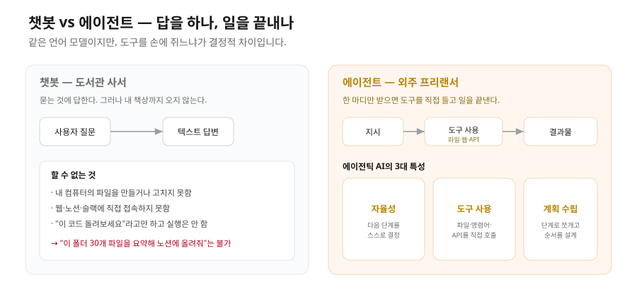
1.1 우리가 알던 챗봇은 무엇이었나
ChatGPT가 처음 나온 2022년 11월부터 2024년 말까지, 사람들이 AI라고 부르며 쓴 도구는 거의 다 챗봇이었습니다. 챗봇의 동작 모델은 단순합니다. 사용자가 텍스트를 입력하면 AI가 텍스트로 답합니다. 그게 전부입니다. 이 패턴은 다음 특징을 가집니다.
- 한 턴(turn)에 한 발화씩 주고받습니다. 사용자가 보내고, AI가 답하고, 다시 사용자가 보내는 것을 반복합니다.
- AI는 사용자 컴퓨터에 손을 댈 수 없습니다. 파일을 만들 수 없고, 인터넷에 직접 접속할 수 없고, 계산기를 돌릴 수 없습니다. 자기 안에 학습된 지식을 텍스트로 풀어낼 뿐입니다.
- AI는 자기가 한 답에 책임지지 않습니다. "이 코드를 돌려보세요"라고 답하지만, 그 코드를 직접 돌려 결과를 확인해 주지는 않습니다.
이 모델로도 글쓰기 보조·번역·요약·아이디어 발산 같은 일은 충분히 잘 됐습니다. 그러나 "이 폴더의 파일 30개를 읽고 요약을 만들어 노션에 올려줘" 같은 일은 챗봇으로는 안 됐습니다. 챗봇이 노션에 손을 댈 수 없었기 때문입니다.
1.2 에이전트는 무엇이 다른가
2024년 후반부터 AI 회사들이 일제히 발표한 새 패러다임이 에이전틱 AI(Agentic AI)입니다. Anthropic, OpenAI, Google이 거의 같은 시기에 비슷한 형태의 제품을 내놓았습니다. 본질은 다음과 같이 정리됩니다.
에이전트는 사용자 대신 행동하는 AI입니다. 단지 답을 해주는 게 아니라, 도구를 직접 들고 일을 끝내줍니다.
여기서 도구는 비유가 아니라 글자 그대로입니다. 에이전트는 다음과 같은 도구를 직접 듭니다.
- 파일 도구: 파일 시스템 읽기·쓰기·삭제, 폴더 탐색
- 터미널 도구: 셸 명령어 실행 (git, npm, python, bash 등)
- 웹 도구: URL 접근, 검색, 폼 입력, 페이지 이해
- 외부 API: Gmail, Notion, Slack, Supabase, Instagram 등 서비스 호출
- 컴퓨터 제어: 화면 캡처, 마우스 클릭, 키보드 입력
그리고 이 도구들을 어떻게 조합할지 스스로 정합니다. "노션에 올려줘" 한 마디면 에이전트가 알아서 폴더 안의 파일을 읽고, 요약을 만들고, 노션 API를 호출해 페이지를 만듭니다.
1.3 에이전틱 AI의 3대 특성
학술적으로 에이전틱 AI는 다음 셋을 모두 갖춘 시스템으로 정의됩니다.
① 자율성(Autonomy) — 사용자가 단계별로 시키지 않아도 다음에 무엇을 할지 스스로 결정합니다. "프레젠테이션 만들어줘" 한 줄에 제목·구성·이미지·디자인까지 자동으로 진행됩니다. 사용자는 결과를 검토할 뿐입니다.
② 도구 사용(Tool Use) — AI가 외부 도구를 직접 부릅니다. 파일을 만들고, API를 호출하고, 명령어를 실행합니다. 답을 내는 데 그치지 않고 행동의 결과로 결과물을 만듭니다.
③ 계획 수립(Planning) — 복잡한 작업을 단계로 쪼개고, 어떤 순서로 어느 도구를 쓸지 미리 계획합니다. 좋은 에이전트는 계획을 사용자에게 먼저 보여주고 승인받은 뒤 실행합니다(Anthropic은 이를 Plan 모드라 부릅니다).
이 셋을 다 갖추면 에이전트, 일부만 갖추면 그냥 챗봇 또는 어시스턴트입니다.
1.4 에이전틱 루프 — 실제 작동 구조
에이전트가 자율성·도구·계획을 어떻게 구현하는지 알려면 에이전틱 루프(Agentic Loop)를 이해해야 합니다. 사용자가 한 번 지시하면 내부에서 이 루프가 반복됩니다.
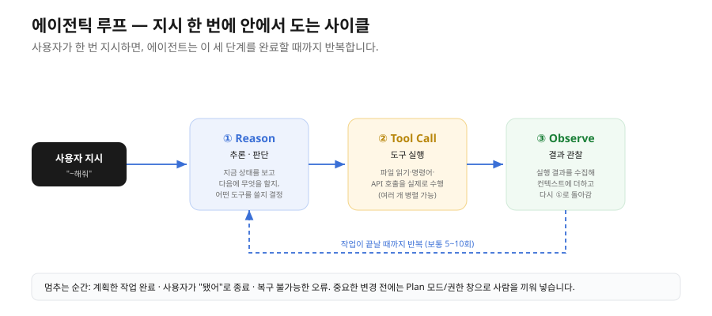
Reason(추론 단계) — 현재 상태·파일·이전 실행 결과를 바탕으로 "다음 단계가 무엇인가"를 판단합니다. 어떤 도구를 부를지, 어떤 값을 넘길지 결정하고, 작업이 끝났는지도 함께 판단합니다.
Tool Call(도구 호출) — 결정한 도구(파일 읽기, 명령어 실행, API 호출 등)를 실제로 실행합니다. 사용자가 Code의 Plan 모드나 Cowork의 권한 다이얼로그로 승인한 뒤 실행됩니다. 한 번에 여러 도구를 병렬로 호출해 속도를 높이기도 합니다.
Observe(관찰 단계) — 도구 실행의 결과(파일 내용, 명령어 출력, API 응답 등)를 수집합니다. 이 결과를 컨텍스트에 더하고 다시 Reason 단계로 돌아갑니다.
언제 멈추는가 — 계획한 작업이 완료되거나(예: 파일 생성 완료, 데이터 분석 끝남), 사용자가 "됐어" 또는 종료 명령을 내리거나, 복구 불가능한 오류가 나면 멈춥니다.
이 루프는 에이전트 내부에서 자동으로 돕니다. Cowork에서 "이 폴더의 엑셀 정리해줘"라고 하면 백그라운드에서 이 사이클이 5~10회 반복될 수 있습니다. Plan 모드·권한 다이얼로그는 이 루프 중 "중요한 변경 전"에만 사용자를 끼워 넣는 안전장치입니다.
1.5 비유 — 도서관 사서 vs 외주 프리랜서
직관을 만들기 위해 비유로 정리합니다.
챗봇은 도서관 사서입니다. 책 위치를 물어보면 알려주고, 어떤 책을 요약해 달라면 요약해 줍니다. 그러나 그 책을 가져와 자기 책상에서 직접 읽는 것은 사용자의 몫입니다. 사서가 사용자 책상까지 따라와 노트를 써 주지는 않습니다.
에이전트는 외주 프리랜서입니다. "이 주제로 자료 정리해서 PDF로 묶어 드라이브에 올려주세요"라는 한 마디만 받으면 — 사서를 찾아가 책을 빌리고, 본인 사무실에서 PDF를 만들고, 사용자 클라우드 드라이브에 업로드까지 끝냅니다. 다만 중요한 단계에서 "이런 형식·이런 방식으로 진행하려는데 괜찮을까요?"라고 한 번 묻습니다. 이 물음이 Plan 모드입니다.
이 교재에서 다루는 서비스 제작(이벤트 RSVP 웹앱)과 콘텐츠 자동화(카드뉴스 발행)는 모두 후자에 해당합니다. 챗봇으로는 만들어지지 않습니다.
📌 이 교재의 러닝 예시 — 앞으로 여러 강에 걸쳐 사내 이벤트 RSVP 서비스(참석 신청·취소·정원 관리)를 하나의 예시로 계속 사용합니다. 서비스의 자세한 설정은 맨 앞 "0강. 러닝 예시" 절에 정리되어 있습니다.
2. Claude 제품 생태계 전체 지도
2.1 7개 제품 한눈에
Anthropic은 단일 회사이지만, 같은 Claude 모델을 여러 인터페이스로 포장해 내놓고 있습니다. 정식 또는 공개 베타 상태인 주요 제품은 다음 일곱 개입니다.
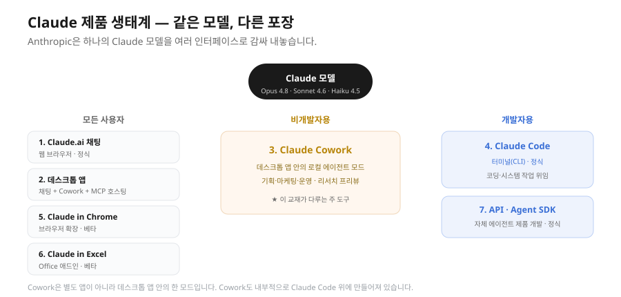
| # |
제품 |
인터페이스 |
대상 |
상태 |
핵심 가치 |
| 1 |
Claude.ai 채팅 |
웹 브라우저 |
모든 사용자 |
정식 |
가장 보편적인 채팅 인터페이스 |
| 2 |
Claude 데스크톱 앱 |
데스크톱(macOS·Windows) |
모든 사용자 |
정식 |
채팅 + Cowork 모드 + MCP 호스팅 |
| 3 |
Claude Cowork (mode) |
데스크톱 앱 안의 로컬 에이전트 모드 |
비개발자(마케팅·기획·운영) |
리서치 프리뷰 |
비개발자가 자기 컴퓨터의 파일·작업을 자동화 |
| 4 |
Claude Code (CLI) |
터미널 |
개발자 |
정식 |
터미널에서 코딩·시스템 작업 위임 |
| 5 |
Claude in Chrome |
브라우저 확장 프로그램 |
모든 사용자 |
베타 |
웹 페이지 이해·자동화·폼 입력 |
| 6 |
Claude in Excel |
Office 애드인 |
모든 사용자 |
베타 |
자연어로 수식 작성·데이터 분석 |
| 7 |
Claude API · Agent SDK |
코드(Python·TypeScript) |
개발자 |
정식 |
자체 에이전트 제품을 개발 |
💡 헷갈리지 말 것 — Cowork은 별도의 앱이 아닙니다. 데스크톱 Claude 앱 안의 한 모드입니다. 데스크톱 앱을 깔면 채팅 모드와 Cowork 모드를 모두 쓸 수 있습니다.
💡 이름의 함정 — "Claude Code"라는 단어는 두 가지로 쓰입니다. 좁은 의미는 터미널 CLI 도구이고(이 교재에서는 항상 이 의미), 넓은 의미는 Anthropic의 에이전트 기술 스택 전체를 가리킵니다. 실제로 Cowork도 이 스택 위에 만들어져 있습니다. 이 교재에서는 혼동을 피하기 위해 좁은 의미로만 사용합니다.
2.2 Claude 모델 라인업
같은 도구를 쓰더라도 어떤 모델을 호출하는지에 따라 결과·속도·비용이 달라집니다. 주요 모델은 셋입니다.
| 모델 |
API 모델명 |
가격(입력/출력, MTok당) |
컨텍스트 윈도우 |
1회 최대 출력 |
속도 |
강점 |
| Claude Opus 4.8 |
claude-opus-4-8 |
$5 / $25 |
1M 토큰 |
128K 토큰 |
보통 |
가장 지능적인 모델. 에이전트·복잡한 코딩·전략 추론 |
| Claude Sonnet 4.6 |
claude-sonnet-4-6 |
$3 / $15 |
1M 토큰 |
64K 토큰 |
빠름 |
속도와 지능의 최적 조합. 대부분의 실무 작업 |
| Claude Haiku 4.5 |
claude-haiku-4-5 |
$1 / $5 |
200K 토큰 |
64K 토큰 |
가장 빠름 |
준최첨단 지능을 가진 가장 빠른 모델. 분류·요약·실시간 |
(MTok = 100만 토큰. Anthropic은 모델을 비정기로 갱신하므로, 시점에 따라 신규 모델이 추가되거나 가격이 바뀔 수 있습니다.)
📝 "API 모델명"이 실제로 쓰이는 모습 — 개발자가 코드로 모델을 부를 때는 표의 "API 모델명" 문자열을 그대로 넣습니다. 기획자가 직접 짤 일은 없지만, 아래를 보면 모델명·토큰·컨텍스트가 코드에서 어떻게 맞물리는지 감이 옵니다.
```python
어떤 모델을, 얼마나 길게 답하게 할지를 문자열·숫자로 지정한다
response = client.messages.create(
model="claude-opus-4-8", # 표의 API 모델명을 그대로 사용
max_tokens=4096, # 이번 응답의 최대 출력 토큰(1회 최대 128K 이내)
messages=[{"role": "user", "content": "이벤트 RSVP 기획안 초안 써줘"}],
)
```
📝 토큰이 뭔가요? — 토큰은 AI가 글을 처리하는 단위입니다. 한국어 한 글자가 대략 1.5~2 토큰, 영어 한 단어가 대략 1.3 토큰입니다. 100만 토큰(1MTok)은 한국어로 약 50만 자, A4 용지 약 250장 분량입니다. 100만 토큰을 Sonnet에 입력하면 $3, Opus에 입력하면 $5입니다.
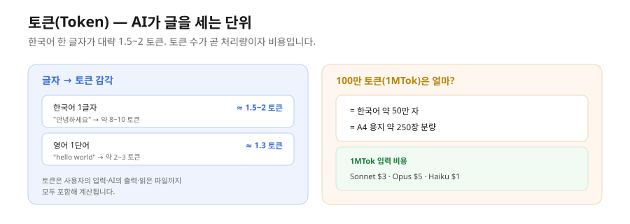
2.3 구독 플랜 비교
Claude는 토큰 단위 API 결제와 별도로 정액제 구독 플랜을 제공합니다. 비개발자 기획자가 주로 쓰는 플랜은 다음 중 하나입니다.
| 플랜 |
월 요금 |
누가 쓰는가 |
사용량(대략) |
| Claude Free |
$0 |
처음 체험하는 개인 |
매우 제한적 — 본격 작업에는 부족 |
| Claude Pro |
$20 |
개인 전문가 |
Sonnet 기준 주 40~80시간 / 5시간당 45회 리밋 |
| Claude Max |
$100 |
헤비 사용자 |
Sonnet 주 140~280시간, Opus 주 15~35시간 |
| Claude Max(상위) |
$200 |
풀타임 위임 사용자 |
Sonnet 주 240~480시간, Opus 주 24~40시간 |
| Claude Team |
1인당/월 |
소규모 팀(조직 내 공유) |
팀원 수에 비례하는 풀 사용량 |
| Claude Enterprise |
협상 |
100명+ 조직 |
무제한 / 조직 정책 통합 |
💡 권장 — 가볍게 배우는 단계라면 Pro($20)로 충분하지만, Cowork으로 여러 작업을 동시에 돌리는 본격 실무에서는 Max($100)를 권장합니다. Pro는 한도가 빠르게 소진될 수 있습니다.
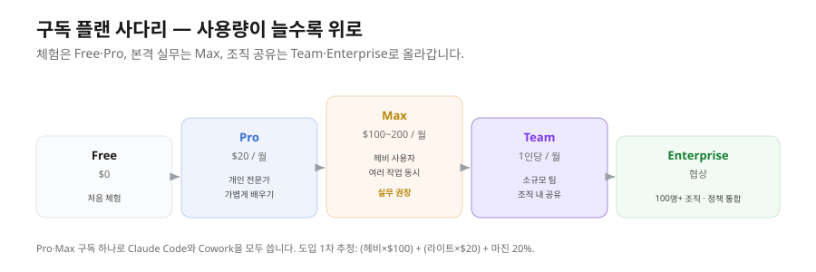
2.4 모델 선택 가이드
Cowork은 사용자가 모델을 직접 고를 수 있습니다. 작업 성격에 따라 다음 가이드가 유용합니다.
- 간단한 분류·요약·번역·이메일 초안 → Haiku 4.5 (가장 저렴, 가장 빠름)
- 일반 업무(PRD 작성, 보고서, 데이터 분석, 코드 1~2개 파일 수정) → Sonnet 4.6 (기본 추천)
- 복잡한 멀티스텝 자동화, 전체 프로젝트 리팩토링, 까다로운 추론 → Opus 4.8 (비용은 높지만 결정적 차이)
처음이라면 Sonnet으로 시작해서, 결과 품질이 부족하면 Opus로 올리고, 단순 반복 작업이면 Haiku로 내리는 패턴이 가장 안전합니다.
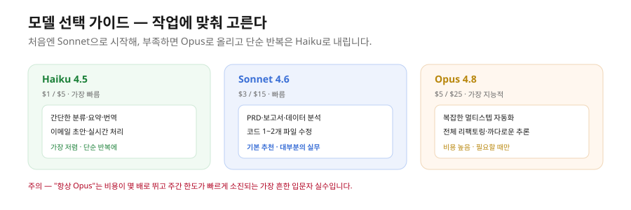
⚠️ "항상 Opus"의 함정 — Opus가 가장 좋다고 모든 작업에 Opus를 쓰면 비용이 몇 배로 뛰고 주간 사용량 한도가 빠르게 소진됩니다. 가장 흔한 입문자 실수입니다.
2.5 컨텍스트 윈도우와 장기 작업
에이전틱 루프가 여러 번 반복되면 에이전트가 봐야 할 정보(파일 내용·대화 히스토리·도구 결과)가 계속 쌓입니다. 이를 컨텍스트(Context)라고 부릅니다. 문제는 모델마다 한 번에 처리할 수 있는 컨텍스트 크기가 정해져 있다는 점입니다(위 표의 "컨텍스트 윈도우" 칼럼).
긴 대화를 나누다가 갑자기 에이전트가 응답하지 않거나 "컨텍스트 초과" 오류가 나는 것은, 누적된 정보가 모델의 한계를 넘었기 때문입니다.
- Opus·Sonnet(1M 토큰): A4 약 5,000장 분량 = 보통 4~6시간 대화
- Haiku(200K 토큰): A4 약 1,000장 분량 = 약 1시간 대화
해결책은 세 가지입니다. 첫째, 체크포인트입니다. 주요 작업이 끝나면 현재 상태를 별도 파일로 저장하고 다음 작업은 새 세션에서 시작합니다. 둘째, 세션 분리입니다. "폴더 정리는 오늘, 보고서 작성은 내일"처럼 작업을 나누면 각 세션이 독립적인 컨텍스트를 가져 신선함을 유지합니다. 셋째, 자동 압축입니다. 에이전트가 오래된 대화를 자동으로 요약하고 최근 정보만 유지하므로 사용자가 따로 조작할 필요가 없습니다.
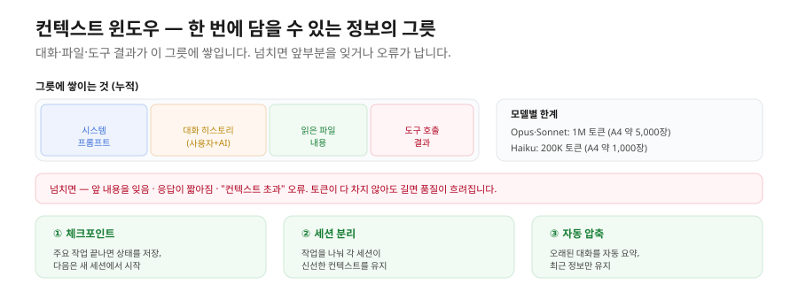
이를 알아두면 "어제 대화한 내용을 오늘 이어받고 싶을 때" 이전 세션을 재개해 이어갈 수 있습니다.
3. Claude Code (CLI) 정밀 분석
3.1 무엇인가
Claude Code는 Anthropic이 만든 터미널 기반 코딩 에이전트입니다. 정의는 단순합니다. 개발자가 자기 터미널에서 claude 명령어를 치면 AI 에이전트가 떠서 코드를 읽고, 작성하고, 수정하고, 명령어를 실행하고, Git 커밋을 하고, 빌드를 돌립니다.
겉모습은 1980년대부터 있던 "터미널"이지만, 그 안에서 일어나는 일은 21세기 에이전트입니다. "이 React 컴포넌트에 다크모드 추가해줘"라고 자연어로 말하면 — 에이전트가 컴포넌트 파일을 찾고, 변경할 위치를 정하고, 새 코드를 쓰고, 변경 내역을 보여주고 승인받은 뒤 적용합니다.
3.2 누가 쓰는가
대상 사용자가 매우 명확합니다. 소프트웨어 엔지니어(백엔드·프론트엔드·풀스택), DevOps·SRE·인프라 엔지니어, 데이터 엔지니어·MLOps, 시스템 관리자, 기술 리드·아키텍트입니다. 공통점은 평소에 터미널을 쓰는 사람이라는 점입니다. 터미널이 익숙하지 않으면 Claude Code는 사실상 쓸 수 없습니다. 진입 장벽이 거기에 있습니다.
3.3 어떤 모습인가
설치는 한 줄입니다(macOS·Linux 기준).
npm install -g @anthropic-ai/claude-code
설치 후 프로젝트 폴더로 이동해 claude를 치면 에이전트 세션이 뜹니다. 터미널 안에서 텍스트로 대화합니다. 화면은 검고, 마우스 클릭이 없고, 모든 결과가 텍스트로 흐릅니다. 핵심 인터랙션은 다음과 같습니다.
- 자연어로 작업 지시 → 에이전트가 계획(plan) 제시 → 사용자가 승인 또는 거절·수정 요청 → 실행
- 슬래시 명령으로 메타 작업:
/init(프로젝트 분석), /clear(컨텍스트 정리), /permissions(권한 보기), /help(도움말) 등
- 파일 수정 시 변경 내역(diff)을 색상으로 보여주고 승인받음
- Git 통합이 자연스러움 — 커밋·브랜치 생성·PR 작성을 에이전트가 직접 수행
3.4 강점과 한계
강점은 개발 워크플로우와의 깊은 통합입니다. Git·빌드 도구·테스트 프레임워크·디버거·IDE를 모두 자연스럽게 호출합니다. 마우스 없이 키보드만으로 끝나는 속도, 매 작업마다 무엇을 할지 먼저 보여주는 Plan/Accept의 투명성, VS Code·JetBrains·GitHub·Slack 등 풍부한 외부 통합, 권한 범위 안에서 깊은 작업을 하는 풀 파일시스템 접근, "테스트 실패하면 고치고 다시 돌려"처럼 반복을 위임하는 자동 루프가 강점입니다.
한계는 명확합니다. GUI가 없어 터미널이 두려운 사람에게는 진입 자체가 안 됩니다. Word·Excel·PowerPoint와 직접 통합되지 않고(별도로 Claude in Excel 등이 존재), 화면 캡처·UI 디자인 검토 같은 시각 작업이 약하며, 호스트 OS에 직접 접근하므로 권한을 잘못 주면 시스템이 손상될 수 있습니다(격리가 약함).
한 문장 요약 — Claude Code는 평소 터미널을 쓰는 개발자의 두 번째 손입니다. 코딩·시스템 작업의 상당 부분을 위임할 수 있고 깊고 강력하지만, 비개발자에게는 어울리지 않습니다.
4. Claude Cowork 정밀 분석
4.1 무엇인가
Cowork은 Claude 데스크톱 앱 안에 들어 있는 비개발자용 로컬 에이전트 모드입니다. 리서치 프리뷰 상태로 운영되고 있습니다.
기술적으로는 Claude Code와 같은 엔진을 씁니다 — 같은 모델, 같은 도구 호출 메커니즘, 같은 MCP 지원입니다. 다만 포장이 다릅니다. 터미널 대신 GUI, 명령어 대신 대화 인터페이스, 호스트 OS 직접 접근 대신 격리된 Linux 샌드박스, 그리고 사용자가 명시적으로 마운트한 폴더만 접근하는 모델입니다. 이 차이가 비개발자에게는 결정적입니다.
4.2 누가 쓰는가
IT 기획자·PM·서비스 기획자, 마케터·콘텐츠 매니저, 운영·고객 지원, 영업·사업 개발, HR·채용 담당자, 컨설턴트·리서처, 회계·재무·법무, 일반 오피스 워커입니다. 공통점은 코드를 짜지 않지만 매일 컴퓨터로 일한다는 점입니다.
4.3 어떤 모습인가
설치와 시작은 네 단계입니다. ① claude.ai에서 데스크톱 앱을 내려받아 설치하고 ② 로그인한 뒤 ③ 작업할 폴더를 명시적으로 마운트하고 ④ 채팅 창에 자연어로 작업을 지시합니다. 겉모습은 채팅 앱이지만 차이가 다음과 같습니다.
- 워크스페이스: 폴더를 마운트하면 에이전트가 그 폴더의 파일을 읽고 쓸 수 있습니다.
- 격리된 샌드박스: 모든 셸 명령이 Linux VM 안에서 돌아, 사용자 컴퓨터의 다른 곳을 건드릴 수 없습니다.
- 권한 다이얼로그: 새 앱·새 폴더에 접근하려 할 때마다 GUI로 권한을 묻습니다.
- 다이얼로그형 인터랙션: 결과물을 코드 diff뿐 아니라 미리보기·이미지·표 형태로 보여줍니다.
- MCP 호스팅: Notion·Slack·Gmail·Supabase 같은 외부 서비스를 한 번 연결해두면 에이전트가 그 서비스도 함께 다룹니다.
- 스킬·플러그인: 자주 쓰는 작업을 스킬로 저장하거나, 마켓플레이스에서 받아 설치할 수 있습니다.
4.4 강점과 한계
강점은 비개발자 친화 GUI(터미널 두려움 없이 시작), Linux 샌드박스 격리(보안 사고 가능성을 구조적으로 차단), 명시적 폴더 마운트("내가 허락한 폴더만 본다"는 신뢰 모델), 권한 티어(read/click/full로 앱별 위험 수준에 맞춰 권한 차등), 풍부한 MCP 생태계(외부 서비스 연결이 한 번 셋업으로 끝), 스킬·플러그인 마켓플레이스(다른 사람의 자동화를 클릭으로 설치), Office 친화(Excel·PowerPoint 파일 읽기·쓰기)입니다.
한계는 깊은 코드 작업의 정확성·속도가 CLI보다 느리고(코드 작업이 잦은 개발자에게 부적합), 샌드박스 부팅 오버헤드로 첫 작업이 약간 느리며, IDE 직접 통합이 없고(별도 데스크톱 창), 호스트 OS 권한 모델에 의존(macOS의 접근성·자동화 권한, Windows의 UAC·Defender 정책에 영향 — 특히 Windows OneDrive 환경에서 함정이 많음)하며, 리서치 프리뷰 상태여서 기능·UI가 바뀔 수 있다는 점입니다.
한 문장 요약 — Cowork은 비개발자의 자동화된 인턴입니다. 폴더 하나를 맡기고 자연어로 일을 시키면, 안전한 격리 환경에서 일을 끝내고 결과를 보여줍니다. 코딩을 못 해도 동작합니다.
5. Code vs Cowork — 12개 항목 정밀 비교
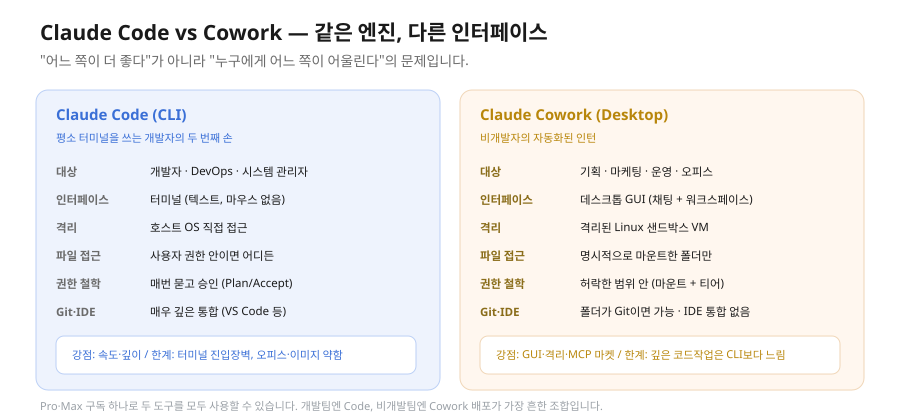
5.1 비교 표
| # |
항목 |
Claude Code (CLI) |
Claude Cowork (Desktop) |
| 1 |
대상 사용자 |
개발자, DevOps, 시스템 관리자 |
IT 기획자, 마케터, 운영, 일반 오피스 워커 |
| 2 |
설치 방식 |
npm install -g @anthropic-ai/claude-code |
claude.ai → 데스크톱 앱 다운로드·설치 |
| 3 |
인터페이스 |
터미널 (CLI) |
데스크톱 GUI (채팅 창 + 워크스페이스) |
| 4 |
격리 방식 |
호스트 OS 직접 접근(사용자 권한 범위) |
격리된 Linux 샌드박스 VM 안에서 모든 작업 |
| 5 |
폴더·파일 접근 |
사용자 권한 안에서 어디든 접근 |
명시적으로 마운트한 폴더에만 접근 |
| 6 |
권한 모델 |
Plan/Accept(매 작업 전 승인) + /permissions |
앱별 read/click/full 티어 + 폴더 마운트 다이얼로그 |
| 7 |
슬래시 명령어 |
풀세트(/init, /clear, /permissions, /compact 등) |
풀세트 + Cowork 특화 명령 |
| 8 |
MCP 지원 |
지원(CLI 명령어로 설정) |
지원(GUI 클릭 설정 + 마켓플레이스) |
| 9 |
스킬 지원 |
지원(CLAUDE.md, .claude/skills/) |
지원(시스템 스킬 + 사용자 스킬 + 마켓플레이스) |
| 10 |
플러그인 마켓플레이스 |
지원(CLI에서 설치) |
지원(GUI에서 설치, 비개발자 친화) |
| 11 |
Git/GitHub 통합 |
매우 깊음 — 에이전트가 직접 commit/push/PR |
가능 — 마운트한 폴더가 Git 저장소면 작동 |
| 12 |
IDE 통합 |
VS Code, JetBrains 공식 확장 |
없음(별도 데스크톱 앱) |
5.2 어느 쪽을 언제 선택하는가
조직에 도입할 도구를 고르는 1차 의사결정 가이드입니다.
Code를 선택해야 할 경우 — 사용자가 평소 터미널·Git·VS Code 안에서 일하고, 코딩·인프라·자동화 스크립트가 주된 작업이며, 깊은 Git 워크플로우(브랜치·PR 리뷰·rebase)를 자동화하고 싶고, IDE 안에서 함께 띄우고 싶으며, 개별 파일 수정이 아니라 전체 프로젝트 구조·아키텍처 리팩토링이 목표일 때입니다.
Cowork을 선택해야 할 경우 — 사용자가 비개발자이거나 코딩이 부수적이고, 자동화 대상이 사무 도구(엑셀·PPT·이메일·노션·슬랙 등)이며, 보안팀이 "샌드박스 격리"를 요구하고, 화면 캡처·문서 비교·이미지 작업이 들어가며, 스킬·플러그인 마켓플레이스로 비기술 사용자가 클릭 설치하길 원하고, 여러 폴더를 다루되 안전한 격리 환경이 필수일 때입니다.
둘 다 필요한 경우(가장 흔함) — 개발팀에는 Code, 비개발팀에는 Cowork을 배포합니다. 사용자별 Pro·Max 플랜은 두 도구를 모두 포함하므로 한 구독으로 둘 다 쓸 수 있습니다. 조직 전체가 100명 이상이면 Team·Enterprise 플랜으로 통합 도입을 검토합니다. 기획자가 본인은 Cowork으로 일하고 개발팀에 Code 도입을 제안하는 패턴도 흔합니다.
6. 이 교재가 Cowork을 중심에 두는 이유
다음 다섯 가지 이유로 이 교재의 실습·예시는 Cowork 위에서 설명됩니다.
첫째, 독자가 IT 기획자(비개발자)입니다. 터미널 진입 비용이 학습 자체를 막습니다.
둘째, 샌드박스 격리가 안전합니다. 여러 사람이 자기 컴퓨터에서 명령을 돌리는 환경에서, 한 사람이 잘못 시켰을 때 호스트 OS가 손상될 가능성을 구조적으로 차단해야 합니다.
셋째, MCP 마켓플레이스 GUI 설치가 흐름에 잘 맞습니다. Supabase MCP, 발행 자동화, 외부 모델 호출 같은 연결을 클릭으로 셋업할 수 있습니다.
넷째, Office 통합·이미지 미리보기가 콘텐츠 자동화 예시에 필수입니다. CLI에서는 이미지 미리보기가 어렵습니다.
다섯째, 본인 업무로 가져가기 쉽습니다. 비개발자가 계속 쓸 도구는 GUI 데스크톱 앱이지 터미널 CLI가 아닙니다.
다만 Code를 무시하는 것은 아닙니다. 위 3장에서 정의·사용자·인터페이스를 명확히 다뤘고, 두 도구를 비교(5장)한 이유는 — 독자가 본인 조직에 도구를 배포할 때 정확한 의사결정 기준을 갖도록 하기 위해서입니다.
7. 기획자가 가져갈 멘탈 모델 5가지
① 같은 엔진, 다른 포장 — Claude Code와 Cowork은 같은 모델·같은 엔진 위에 다른 인터페이스를 입힌 두 제품입니다. 그러므로 "Code가 더 강력하다"는 인식은 부분적으로만 맞습니다. 깊이는 비슷하고, 비개발자 친화도는 Cowork이 압도적입니다. 조직 도입은 "어느 쪽이 더 좋다"가 아니라 "어느 사용자에게 어느 쪽이 어울린다"의 문제입니다.
② 권한 모델은 보안 철학의 핵심 — Code는 "매번 묻고 승인받는다(Plan/Accept)", Cowork은 "한 번 허락받은 범위 안에서 일한다(폴더 마운트 + 권한 티어)"입니다. 둘 다 안전하지만 철학이 다릅니다. Code는 투명성이 더 강하고, Cowork은 격리가 더 강합니다. 조직 보안 정책에 어느 쪽이 부합하는지로 판단합니다.
③ 에이전트는 자동화이지만 완전 자동은 아니다 — 에이전트는 "계획 → 사용자 승인 → 실행 → 사용자 검수"의 협업 모델입니다. "Claude한테 맡기면 끝"은 잘못된 기대입니다. 90%는 에이전트, 10%는 사람의 검수입니다. 그러므로 사람의 도메인 역량·판단력은 여전히 핵심 자산입니다. AI는 사람을 대체하는 게 아니라 증폭합니다.
④ MCP는 신뢰할 수 있는 확장 시장이다 — MCP(Model Context Protocol)는 AI 에이전트가 외부 도구·서비스에 연결되는 표준 규격입니다. 한 번 연결해두면 모든 작업에서 그 서비스가 도구로 쓰입니다. 공식 MCP가 빠르게 늘고 있으므로, 조직 도입 시 "우리가 쓰는 SaaS의 MCP가 있는가?"를 먼저 확인합니다. 있으면 통합이 클릭이고, 없으면 자체 MCP 구축 또는 데이터 추출 우회가 필요합니다.
⑤ 가격은 모델·사용량·팀 규모로 결정된다 — 비용 변수는 ① 어떤 모델을 호출하는가(Haiku $1 vs Opus $5), ② 월 사용량(시간), ③ 팀 규모, ④ 플랜 선택(Pro $20 / Max $100 / Team / Enterprise) 네 가지입니다. 1인 헤비 사용자는 Max $100~$200, 10명 이상 팀은 Team 플랜 비교가 합리적이며, 100명 이상 조직은 Enterprise 협상으로 단가를 크게 낮출 수 있습니다. 도입 1차 추정 공식은 (헤비 사용자 수 × $100) + (라이트 사용자 수 × $20) + 마진 20% 정도입니다.
8. 자주 묻는 질문
Q1. Claude 대신 GPT나 Gemini를 쓰면 안 되나요? — 가능합니다. 다만 이 교재의 실습·예시는 Claude Cowork을 기준으로 설명하므로 Claude 계정이 필요합니다. 다른 도구로 학습한 뒤 비교해 보는 것은 권장합니다.
Q2. 회사 정책상 클라우드 AI를 못 쓰는데 Cowork은 가능한가요? — Cowork도 결국 Anthropic 클라우드로 데이터를 보냅니다. 완전 온프레미스가 필요하면 부적합합니다. AWS Bedrock·Google Vertex 같은 호스팅 옵션은 별도로 검토해야 합니다.
Q3. macOS와 Windows 중 어느 쪽이 안정적인가요? — macOS가 일반적으로 마찰이 적습니다. Windows는 OneDrive·Defender·한글 사용자명 등 변수가 많아 사전 준비가 더 필요합니다.
Q4. 회사에 도입을 제안하려는데 어디서 시작하나요? — 본인이 Pro 1개월로 본인 업무에 적용 → 시간 절감·결과물 품질 측정 → IT·보안팀과 데이터 처리 정책 협의 → 작은 파일럿(3~5명)으로 Max 또는 Team 플랜 → 3개월 ROI 측정 → 전사 확산. 이 흐름이 표준입니다.
Q5. AI가 제 일을 대체하는 것 아닌가요? — 단기에는 자동화로 시간을 벌어 주고, 본인은 더 전략적·창의적인 일에 시간을 씁니다. 중기에는 AI를 잘 쓰는 사람과 못 쓰는 사람의 격차가 벌어집니다. 핵심 메시지는 "한 번에 이해되지 않아도 정상이고, 반복하면 분명히 손에 익는다"는 것입니다.
용어 정리
| 용어 |
뜻 |
| 에이전틱 AI(Agentic AI) |
자율성·도구 사용·계획 수립을 갖춰 사용자 대신 일을 끝내는 AI |
| 에이전틱 루프 |
Reason → Tool Call → Observe를 작업 완료까지 반복하는 내부 사이클 |
| Plan 모드 |
중요한 변경 전 계획을 사람에게 보여주고 승인받는 안전장치 |
| Claude Code |
개발자용 터미널(CLI) 코딩 에이전트 |
| Claude Cowork |
데스크톱 앱 안의 비개발자용 로컬 에이전트 모드 |
| 샌드박스 |
사용자 컴퓨터와 격리된 Linux VM. Cowork의 모든 셸 명령이 여기서 실행 |
| 폴더 마운트 |
Cowork이 접근할 폴더를 사용자가 명시적으로 허락하는 것 |
| 권한 티어(read/click/full) |
앱 위험 수준에 따라 Cowork이 할 수 있는 조작을 차등하는 단계 |
| 컨텍스트 윈도우 |
모델이 한 번에 처리할 수 있는 정보(토큰)의 최대 크기 |
| 토큰 |
AI가 글을 처리하는 단위. 한국어 한 글자가 약 1.5~2 토큰 |
| MCP(Model Context Protocol) |
에이전트가 외부 도구·서비스에 연결되는 표준 규격 |
| 스킬 / 플러그인 |
자주 쓰는 작업을 저장·배포하는 자동화 묶음 |
| 모델 라인업 |
Opus(최고 지능) / Sonnet(균형) / Haiku(최고 속도) |
한눈에 정리
- 챗봇은 답만, 에이전트는 일을 끝냅니다. 차이는 도구(파일·웹·API)를 직접 드느냐입니다. 3대 특성은 자율성·도구 사용·계획 수립입니다.
- 에이전트는 내부에서 Reason → Tool Call → Observe 루프를 반복하며, 중요한 변경 전에만 사람의 승인을 받습니다.
- Claude 생태계는 하나의 모델(Opus 4.8 / Sonnet 4.6 / Haiku 4.5)을 7개 인터페이스로 감싼 것입니다. Cowork은 별도 앱이 아니라 데스크톱 앱 안의 한 모드입니다.
- Code는 개발자의 터미널 도구, Cowork은 비개발자의 GUI 인턴입니다. 같은 엔진, 다른 포장 — 누구에게 어느 쪽이 어울리느냐로 고릅니다.
- 비용은 모델·사용량·팀 규모·플랜으로 결정됩니다. Sonnet으로 시작해 필요할 때만 Opus로 올리는 것이 안전합니다.
다음 강에서는 Cowork이 어떻게 작동하고, 어떻게 지시해야 잘 움직이는지(프롬프트 원칙)를 다룹니다.
더 읽을 자료
- Anthropic 공식 — https://www.anthropic.com
- Claude 모델·가격 문서 — https://docs.claude.com
- Claude Code 공식 — https://code.claude.com
- Claude 헬프 센터 — https://support.claude.com
- MCP 공식 사양 — https://modelcontextprotocol.io
2부 · 초급
코딩 with Claude 초급 2강. 에이전트 엔진 원리 — 격리·권한·컨텍스트·MCP·스킬
유형: 이론 (다이어그램 보강판) · 읽는 데 약 45분
선수: 1강(에이전틱 AI·생태계·Code vs Cowork). 에이전틱 AI의 3대 특성과 Code/Cowork의 정의 차이를 알고 있어야 합니다.
이 강을 마치면: ① 에이전트 엔진의 핵심 구성요소(격리·폴더·권한·컨텍스트·슬래시·MCP·스킬·커맨드·플러그인)를 설명한다 ② 같은 개념이 Code와 Cowork에서 어떻게 다르게 표현되는지 항목별로 비교한다 ③ CLAUDE.md·권한·MCP를 어떻게 설계할지 판단한다.
0. 들어가며 — 같은 엔진, 두 가지 표현
1강에서 정리한 사실 하나를 다시 짚습니다. Cowork은 Claude Code 위에 올라가 있습니다. Cowork은 별도의 엔진을 갖지 않습니다. Claude Code의 도구 호출 메커니즘, Plan/Accept 모델, 슬래시 명령, MCP, 스킬, 플러그인 시스템이 그대로 Cowork 안으로 들어왔습니다.
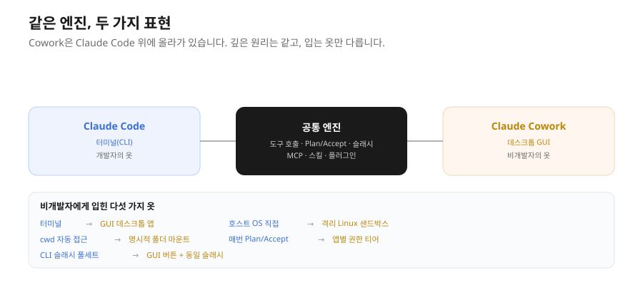
다만 비개발자에게 어울리는 옷을 입혔을 뿐입니다. 그 옷이 다음 다섯 가지입니다. ① 터미널 → GUI(데스크톱 앱), ② 호스트 OS 직접 접근 → 격리된 Linux 샌드박스 VM, ③ 현재 폴더(cwd) 자동 접근 → 명시적 폴더 마운트, ④ 매번 승인하는 Plan/Accept → 앱별 권한 티어(read/click/full), ⑤ CLI 슬래시 풀세트 → 자주 쓰는 GUI 버튼 + 동일한 슬래시 명령입니다.
이 다섯 가지 옷의 차이만 알면 깊은 원리는 두 도구에 똑같이 적용됩니다. 그래서 이 강은 원리를 한 번씩 설명하고, 매 절에서 "Code에서는 이렇게, Cowork에서는 이렇게"를 나란히 보여줍니다. 이 강에서 다룰 엔진 구성요소는 다음 여덟 가지입니다.
| # |
구성요소 |
한 줄 정의 |
| 1 |
격리(Isolation) |
에이전트가 사용자 컴퓨터에 손을 댈 때 어디까지 닿을 수 있는지의 경계 |
| 2 |
폴더 모델(Folder model) |
에이전트가 어느 파일을 보고 어느 파일을 못 보는지의 규칙 |
| 3 |
권한(Permissions) |
위험한 작업을 하기 전 사용자에게 어떻게 묻는지의 패턴 |
| 4 |
컨텍스트(CLAUDE.md) |
에이전트가 사용자·프로젝트에 대해 미리 알고 시작할 정보 |
| 5 |
슬래시 명령 |
자연어 대신 약어로 메타 작업을 빠르게 부르는 단축키 |
| 6 |
MCP |
외부 서비스를 에이전트의 도구로 붙이는 표준 |
| 7 |
스킬(Skills) |
자주 쓰는 도메인 지식·작업 패턴을 매뉴얼처럼 패키지화한 자산 |
| 8 |
커스텀 커맨드 + 플러그인 |
자주 쓰는 작업을 한 단어로 부르고, 스킬·MCP·커맨드를 묶어 배포 |
📌 러닝 예시 — 이 강에서도 사내 이벤트 RSVP 서비스(참석 신청·취소·정원 관리)를 예시로 씁니다. 자세한 설정은 맨 앞 "0강. 러닝 예시"를 참고하세요.
1. 고정 응답 vs 추론 응답 — 두 패러다임을 섞는다
비개발자가 AI 코딩 도구를 처음 쓸 때 가장 큰 혼란은 여기서 옵니다.
"코드는 항상 결정론적(deterministic)이어야 한다. 같은 입력이면 같은 출력이 나와야 한다. 그런데 왜 AI는 매번 다른 답을 주는가?"
타당한 질문입니다. 에이전트를 제대로 알려면 두 패러다임을 동시에 이해해야 합니다.
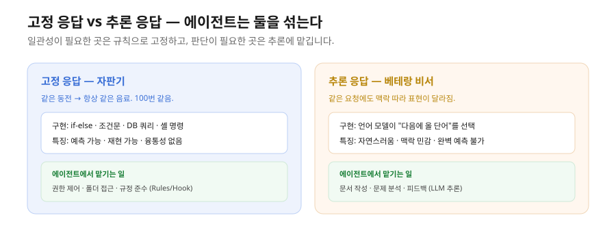
고정(정해진) 응답은 동일한 입력에 항상 같은 출력을 내는 방식입니다. if-else, 조건문, 데이터베이스 쿼리, 셸 명령처럼 명시적 규칙에 따라 동작합니다. 예측 가능하고 재현 가능합니다. 안내 봇이 "9월 1일에 접수 시작"이라고 매번 같은 답을 주는 것과 같습니다.
추론(확률적) 응답은 언어 모델이 내부 가중치를 바탕으로 "다음에 올 가능성이 높은 단어"를 계속 선택해 만드는 답입니다. 같은 요청이라도 맥락·분위기·시점에 따라 표현이나 논리 흐름이 조금씩 달라질 수 있습니다. 더 자연스럽고 맥락에 민감하지만 완벽히 예측할 수는 없습니다. 같은 질문을 상사·동료·멘토에게 해도 답변 스타일이 다른 것과 같습니다.
에이전트는 두 패러다임을 혼용합니다. 정해진 규칙(Rules)으로는 고정 응답을 구현하고("절대 이 폴더 건드리지 마", "이 형식으로만 출력해"), 언어 모델의 추론으로는 유연한 문제 해결을 합니다. 예를 들어 RSVP 처리 에이전트라면 — "RSVP 마감은 항상 요청일로부터 7일 뒤다"는 규칙으로 고정하고, "참석자 피드백을 읽고 분위기를 파악해 개선안을 제시하라"는 추론에 맡깁니다.
이 혼용이 에이전트를 강력하게 만듭니다. 실무 함의는 균형에 있습니다. 높은 일관성이 필요한 부분(권한 제어, 폴더 접근, 규정 준수)은 규칙·Hook으로 고정하고, 창의성·맥락 이해가 필요한 부분(문서 작성, 문제 분석, 피드백)은 추론에 맡깁니다. 에이전트를 "정해진 대로만 움직이는 자동화 도구"로 기대하면 실망하고, "매번 다른 답을 주는 불안정한 도구"로 보면 도입을 꺼립니다. 정답은 그 사이에 있습니다.
2. 에이전트 운영 설계의 6가지 구성요소
앞의 여덟 가지 엔진 구성요소와 별개로, 에이전트를 운영 차원에서 설계할 때는 여섯 가지 핵심 요소를 결정해야 합니다. 실제 에이전트를 구축할 때 이 여섯이 모두 필요합니다.
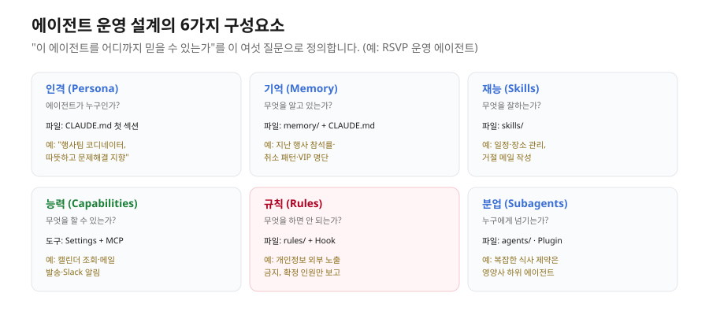
| 구성요소 |
정의 |
핵심 파일·도구 |
목적 |
| 인격(Persona) |
에이전트가 어떤 정체성·역할인가 |
CLAUDE.md 첫 섹션 |
"누가" 일하는가 |
| 기억(Memory) |
세션 간 무엇을 기억하는가 |
memory/ (자동) + CLAUDE.md |
문맥 유지, 반복 설명 방지 |
| 재능(Skills) |
어떤 특기·전문성을 가지는가 |
skills/ 디렉토리 |
도메인 지식을 매뉴얼화 |
| 능력(Capabilities) |
어떤 도구를 쓸 수 있는가 |
Settings + MCP |
외부 서비스 접근 |
| 규칙(Rules) |
어떤 제약을 따르는가 |
rules/ + Hook |
금지 사항·안전 정책 |
| 분업(Subagents) |
어디까지 위임하는가 |
agents/ + Plugin |
복잡한 업무를 하위 에이전트에 분담 |
이 여섯 가지를 RSVP 운영 에이전트로 채우면 이렇게 됩니다. 인격은 "행사팀 코디네이터, 참석자 대응은 따뜻하고 문제 해결 지향", 기억은 이전 행사들의 참석률·취소 패턴·VIP 명단, 재능은 일정·장소·식사 제약 관리와 거절 메일 작성, 능력은 캘린더 조회·메일 발송·Slack 알림, 규칙은 "개인정보(휴대폰·주소) 외부 메시지로 노출 금지"와 "확정 인원만 예산 보고", 분업은 "복잡한 식사 제약 조합(채식+글루텐프리+종교) 분석은 영양사 하위 에이전트에 위임"입니다.
이 여섯 가지를 명시하면 팀은 "RSVP 에이전트를 어디까지 믿을 수 있는가"를 정확히 알게 됩니다. 조직에 에이전트를 도입할 때 이 여섯을 하나씩 결정하는 회의가 곧 에이전트 설계입니다. 기술 문제가 아니라 업무 설계 문제입니다.
3. 아키텍처 한눈에 — 7개 레이어와 심장
앞의 여섯 요소가 실제 도구 안에서 어떻게 배치되는지 한 번 그림으로 잡으면, 이후 절들(격리·권한·CLAUDE.md·MCP·스킬)이 모두 어느 자리에 속하는지가 명확해집니다. 여기서는 큰 그림만 잡습니다. 깊은 작동 원리는 이후 절과 중·고급 과정에서 다룹니다.
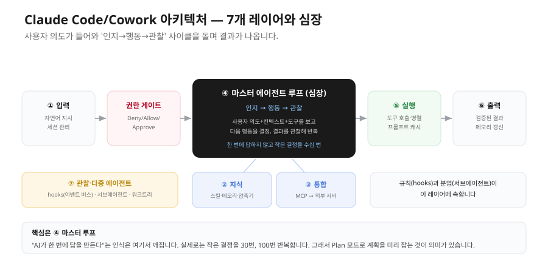
Claude Code/Cowork은 7개의 계층으로 동작하고, 각 레이어가 하나의 책임을 집니다.
| # |
레이어 |
책임 |
| 1 |
입력(Input) |
자연어 지시를 받고, 세션을 시작·재개·분기·유지 |
| 2 |
지식(Knowledge) |
스킬 카탈로그·작업 그래프·메모리·컨텍스트 압축기 — "무엇을 알고 어디서 꺼내쓰는가" |
| 3 |
통합(Integration) |
MCP 런타임 — 외부 시스템을 표준 프로토콜로 연결 |
| 4 |
마스터 에이전트 루프 |
핵심 심장. 인지 → 행동 → 관찰 사이클을 반복. 모든 결정이 여기서 일어남 |
| 5 |
실행(Execution) |
결정된 행동을 수행 — 도구 호출·병렬 실행·응답 스트리밍·프롬프트 캐시 |
| 6 |
출력(Output) |
검증된 결과 반환 + 메모리 갱신 |
| 7 |
관찰·다중 에이전트 |
이벤트 버스(hooks)·백그라운드 작업, 서브에이전트·워크트리 분리 |
여기서 가장 중요한 것은 레이어 4(마스터 에이전트 루프)입니다. 사용자가 "이거 만들어줘"라고 하면 에이전트는 한 번에 답을 만드는 게 아니라 인지 → 행동 → 관찰을 수십 번 반복하며 점진적으로 결과를 만듭니다. 사람 비서가 "지시 받음 → 일 시작 → 결과 확인 → 다음 단계 결정"을 반복하는 것과 같습니다.
- 입력 레이어는 CLI·IDE·CI 등 여러 입구에서 같은 엔진으로 들어온 의도를 세션 단위로 묶습니다. 세션은 재개(Resume)·분기(Fork)·유지(Persist)가 가능해, 길고 복잡한 작업을 쉬었다 이어갈 수 있습니다.
- 지식 레이어에는 스킬 레지스트리(필요할 때만 컨텍스트에 주입), 컨텍스트 압축기(길어지면 과거 대화를 요약), 작업 그래프(작업 간 의존·우선순위), 메모리 저장소(세션을 가로지르는 영속 기억)가 있습니다.
- 권한 게이트는 입력에서 루프로 가는 길목에서 모든 도구 호출을 검사합니다. 사용자가 정의한 규칙을 거부(Deny)·허용(Allow)·승인 요청(Approve) 3단계로 평가합니다.
- 실행 레이어의 프롬프트 캐시는 같은 시스템 프롬프트를 반복할 때 비용을 크게 줄이고, 스트리밍 런타임은 여러 도구를 병렬로 실행합니다.
- 관찰·다중 에이전트 레이어에는 규칙(hooks)과 분업(서브에이전트)이 함께 놓입니다. 입문 단계에서는 개념만 잡고, 깊은 운영은 중·고급에서 다룹니다.
핵심을 한 줄로 하면, Claude Code/Cowork은 "사용자 의도를 받아 인지·행동·관찰의 작은 사이클을 반복하고, 그 사이사이에 권한·메모리·도구·관찰·분업이 끼어드는" 시스템입니다. "AI가 한 번에 답을 만든다"는 인식은 이 루프 때문에 깨집니다. 실제로는 작은 결정의 반복이라, 중간에 길을 잃으면 "왜 그 결정을 했는가"를 물을 수 있고 Plan 모드로 계획을 미리 잡는 것이 의미가 있습니다.
4. 격리 모델 — 에이전트가 어디까지 닿을 수 있나
4.1 왜 격리가 필요한가
에이전트는 사용자 컴퓨터에 직접 손을 댑니다. 파일을 만들고, 명령어를 실행하고, 인터넷에 접속합니다. 챗봇과 결정적으로 다른 점이자 가장 큰 위험입니다. "이 폴더 정리해줘" 한 마디에 중요한 파일을 삭제하거나, 잘못된 명령어 한 줄로 시스템에 손상을 주거나, 의도치 않은 외부 통신을 하거나, 한 사용자의 작업이 시스템 전체에 영향을 줄 수 있습니다.
이 위험을 막는 기술적 장치가 격리(Isolation)입니다. 격리는 "에이전트가 작동할 수 있는 영역"과 "그 바깥"을 명확히 가르고, 바깥은 절대 못 닿게 만드는 것입니다. 비유하면, 화학 실험을 밀폐된 실험실에서 하면 무엇을 시도해도 그 안에서만 결과가 나오지만, 사무실 책상에서 하면 시약이 책장에도 닿고 옆자리 노트북에도 튑니다. Cowork은 격리된 실험실, Code는 사무실 책상입니다. 다만 Code의 책상에는 "위험한 시약 한 방울 떨어뜨리기 전에 동료에게 확인받는다"는 규칙(Plan/Accept)이 있어 안전이 유지됩니다.
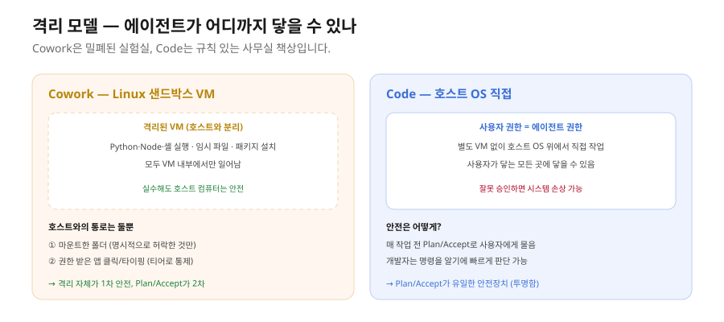
4.2 Cowork의 격리 — Linux 샌드박스 VM
Cowork이 작업할 때 모든 파일·셸·네트워크 작업은 호스트 OS가 아니라 Cowork이 띄운 격리된 Linux 가상머신(VM) 안에서 일어납니다. 이 VM은 호스트 OS와 분리돼 있고, 종료되면 안의 임시 파일은 모두 사라집니다. VM 안에서 에이전트는 Python·Node.js·셸 명령을 실행하고, 임시 파일을 만들고 읽고 지우며, 허락된 도메인으로 네트워크를 호출하고, 패키지를 설치합니다. 이 모든 게 VM 내부에서만 일어나므로 사용자 컴퓨터의 다른 파일·앱·시스템은 영향을 받지 않습니다.
VM이 호스트 컴퓨터와 통하는 통로는 둘뿐입니다. 첫째는 마운트된 폴더로, 사용자가 명시적으로 "같이 보자"고 허용한 폴더만 VM 안에서 보입니다. 둘째는 권한 받은 앱의 클릭·타이핑으로, 일부 앱(Office·노션 데스크톱 등)은 VM이 아니라 호스트 OS 위에서 직접 조작이 일어나며 권한 티어로 통제됩니다.
이 구조는 비개발자에게 결정적입니다. 실수해도 시스템이 망가지지 않습니다. "이 폴더 비워줘"라고 잘못 말해도 마운트된 폴더 안만 비워지지 호스트의 다른 곳은 닿지 않습니다. 이것이 Cowork이 비개발자에게 안전한 핵심 이유입니다.
4.3 Code의 격리 — 호스트 OS + 권한 명시
Code는 별도의 VM을 띄우지 않습니다. 사용자가 터미널에서 claude를 치면 에이전트는 그 사용자의 권한으로 호스트 OS 위에서 직접 작업합니다. 즉 에이전트가 닿는 영역 = 사용자 본인이 닿는 영역입니다. 안전은 매번 작업 전 Plan/Accept로 보장됩니다. 파일 수정 전, 명령어 실행 전, 외부 호출 전에 "이걸 하려고 합니다"라고 보여주고 사용자가 승인하거나 거절합니다. 이 모델은 투명하지만, 사용자가 빠르게 승인을 누르거나 --dangerously-skip-permissions 같은 플래그를 잘못 쓰면 보호막이 무너집니다.
개발자에게 이 모델이 어울리는 이유는, 개발자는 매일 터미널을 쓰고 명령어가 무엇을 하는지 알기에 매번 계획을 빠르게 읽고 판단할 수 있기 때문입니다. 또 개발자에게는 여러 프로젝트 폴더·시스템 설정·Git 저장소에 걸쳐 작업하는 흐름이 많아, VM 격리가 오히려 방해가 됩니다.
4.4 비교와 기획자 함의
| 항목 |
Cowork |
Code |
| 격리 방식 |
Linux 샌드박스 VM |
호스트 OS 직접 |
| 기본 접근 범위 |
VM 내부 + 마운트 폴더만 |
사용자 권한이 닿는 모든 곳 |
| 위험 발생 시 영향 |
VM·마운트 폴더로 한정 |
사용자 권한 전체 |
| 안전 메커니즘 |
격리(1차) + Plan/Accept(2차) |
Plan/Accept가 유일 |
| VM 부팅 오버헤드 |
첫 작업 시 약간 |
없음 |
보안팀이 "AI가 우리 컴퓨터에서 뭘 할 수 있냐"고 물으면, Cowork은 "마운트한 폴더 안에서만 일하고 그 외엔 격리됩니다", Code는 "사용자가 매번 승인하는 영역에서만 일합니다"라고 답합니다. 보안 정책이 강한 조직(금융·공공·법무)에는 Cowork의 격리 모델이 도입 설득에 훨씬 유리합니다.
5. 폴더·파일 접근 모델
5.1 마운트의 개념 (Cowork)
격리된 VM 안에서 작동하는 Cowork이 사용자 컴퓨터의 파일을 보는 방법이 폴더 마운트입니다. 마운트는 "이 호스트 폴더와 VM의 특정 경로를 연결한다"는 명시적 설정입니다. 비유하면, 직원에게 "이 캐비닛은 봐도 되고 저 캐비닛은 보지 마세요"라고 키를 나눠주는 것과 같습니다. 키를 받지 못한 캐비닛은 옆을 지나가도 못 엽니다.
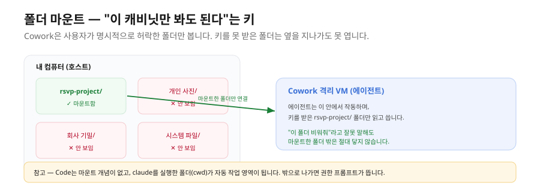
최초 마운트는 이렇게 일어납니다. Cowork 새 세션을 시작하면 "작업 폴더 선택" 다이얼로그가 뜨고, 사용자가 명시적으로 폴더를 선택하면 권한 승인 다이얼로그를 거쳐 VM 안에서 그 폴더가 보이게 됩니다. 한 세션에 여러 폴더를 마운트할 수도 있지만, 입문 단계에서는 한 폴더에 집중합니다. 여러 폴더를 마운트하면 권한 관리가 복잡해집니다.
한편 VM 안에는 자동으로 임시 출력 폴더(outputs)가 있어 에이전트가 임시 결과를 여기 씁니다. 하지만 이건 VM 임시 영역이라 세션이 끝나면 사라집니다.
⚠️ 흔한 실수 — 결과물을 임시 출력 폴더에만 저장하고 마운트 폴더로 옮기지 않으면 다음 세션에 사라집니다. 최종 산출물은 반드시 마운트한 폴더에 저장하세요.
⚠️ Windows OneDrive 함정 — Windows 사용자 다수가 Documents·Desktop·Pictures를 OneDrive로 동기화한 채 씁니다. 이 폴더 안에 작업 폴더를 만들어 마운트하면 ① OneDrive Files On-Demand로 파일이 클라우드 전용이라 읽을 때마다 다운로드가 걸려 매우 느리고 ② 동기화와 VM 쓰기가 충돌해 파일이 잠기며 ③ 경로 길이가 260자 한계를 넘어 패키지 설치가 실패합니다. 대응은 단순합니다 — C:\dev\<폴더명>처럼 OneDrive 바깥의 짧은 경로에 작업 폴더를 만드세요.
5.2 Code의 폴더 모델
Code는 마운트 개념이 없습니다. 사용자가 어떤 디렉토리에서 claude를 치면 그 디렉토리(cwd)가 자동으로 작업 영역이 됩니다. 그 외 디렉토리에 접근하려 하면 권한 프롬프트가 뜹니다.
cd ~/dev/my-project
claude
> "이 프로젝트의 README 작성해줘"
이때 ~/dev/my-project가 자동 작업 영역입니다. 에이전트는 이 폴더 안 파일은 자유롭게 읽지만, 위로 올라가 ~/Documents를 보려 하면 권한 프롬프트가 뜹니다.
| 항목 |
Cowork |
Code |
| 접근 모델 |
명시적 폴더 마운트 |
cwd 자동 + 권한 프롬프트 |
| 여러 폴더 |
명시적 추가 마운트 |
cwd 변경(cd) |
| 신뢰 모델 |
"허락한 폴더만 본다" |
"내가 있는 위치에서 시작한다" |
6. 권한 모델 — 위험한 작업을 어떻게 묻나
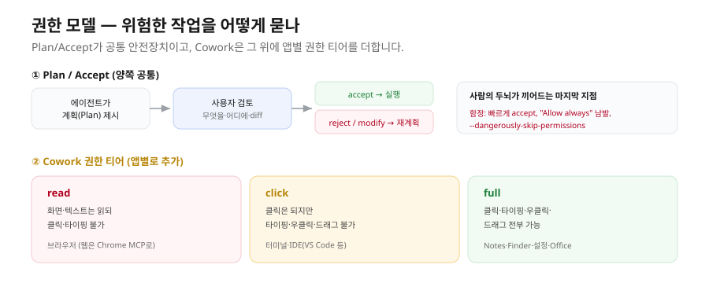
6.1 Plan / Accept (양쪽 공통)
Code와 Cowork이 공유하는 가장 중요한 안전장치가 Plan / Accept입니다. 에이전트가 위험한 작업(파일 수정·삭제·외부 호출·셸 명령)을 하기 전에 계획(Plan)을 보여주고 승인(Accept)을 받습니다. 계획에는 무슨 작업을 할지, 어느 파일·폴더·서비스에 영향을 주는지, 변경 전후의 diff가 검토하기 좋은 형태로 담깁니다. 사용자는 accept(그대로 실행)·reject(거절, 재계획)·modify(수정 요청, 예: "이 파일은 빼고 다시 계획해줘") 중에서 고릅니다. 이것이 "에이전트가 잘못된 작업을 하기 전에 사람의 두뇌가 끼어드는 마지막 안전장치"입니다.
6.2 Cowork의 권한 티어 — read / click / full
Cowork은 Plan/Accept 위에 앱별 권한 티어를 더합니다. 호스트 OS의 어느 앱을 어느 수준까지 다룰 수 있는지를 미리 정합니다.
| 티어 |
의미 |
어떤 앱이 받나 |
| read |
화면·텍스트는 읽되 클릭·타이핑 불가 |
브라우저(웹은 별도 Chrome MCP로 다룸) |
| click |
클릭은 되지만 타이핑·우클릭·드래그 불가 |
터미널·IDE(VS Code·JetBrains) |
| full |
클릭·타이핑·우클릭·드래그 전부 가능 |
Notes·Finder·System Settings·Office 앱 |
권한 다이얼로그가 뜰 때 사용자가 어떤 티어를 줄지 선택하고, 한 번 받으면 그 세션 안에서는 계속 유효합니다.
6.3 Code의 권한과 자동승인 함정
Code에는 권한 티어가 없습니다. 대신 /permissions 명령으로 현재 상태를 보고 조정합니다. 모델은 두 가지로 단순화됩니다 — 작업 폴더(cwd) 안의 파일 읽기·쓰기는 프롬프트 없이(매 작업 계획은 표시), 외부 폴더·시스템 명령·외부 네트워크는 매번 승인입니다.
두 도구 모두 자동승인의 함정이 있습니다. Code에는 모든 계획을 자동 승인하는 --dangerously-skip-permissions 플래그가 있습니다. CI/CD 같은 자동 실행 환경을 위한 것이지만 평소에 켜두면 위험합니다. Cowork에는 권한 다이얼로그의 "Allow always"를 너무 자주 누르는 패턴이 있습니다. 빠르지만 위험 시점에 사람이 끼어들 기회가 사라집니다. 좋은 습관은 입문자는 항상 계획을 표시하는 모드로 시작하고, 익숙해진 뒤 안전한 작업(예: "이 폴더의 README 읽기")만 always를 허용하며, rm 같은 파괴적 명령에는 절대 always를 주지 않는 것입니다.
7. 컨텍스트 엔지니어링 — CLAUDE.md
7.1 컨텍스트 윈도우의 한계
Claude 모델은 한 번에 받아들일 수 있는 텍스트 양이 정해져 있습니다(컨텍스트 윈도우). 1강에서 본 것처럼 Opus 4.8과 Sonnet 4.6은 1M 토큰, Haiku 4.5는 200K 토큰이 한계입니다. 이 한계 안에 사용자의 모든 메시지, 에이전트의 모든 답변, 에이전트가 읽은 파일 내용, 도구 호출 결과, 시스템 프롬프트가 전부 들어갑니다. 큰 프로젝트나 긴 대화에서는 컨텍스트가 빠르게 소진되고, 한계에 닿으면 에이전트가 앞부분을 잊거나 응답이 짧아지거나 "토큰 한도 초과" 오류가 납니다.
7.2 CLAUDE.md — 프로젝트 온보딩 위키
CLAUDE.md는 에이전트가 새 세션을 시작할 때마다 읽는 프로젝트별 온보딩 위키입니다. 회사에 새 협력사가 합류했을 때 프로젝트 위키나 팀 핸드오버 노트를 한 번에 공유하는 것과 같습니다. 협력사는 위키를 먼저 읽고 작업에 들어가므로 매번 같은 설명을 안 해도 됩니다. CLAUDE.md에는 프로젝트가 무엇인지(한 줄 설명), 어떤 기술 스택을 쓰는지, 코드 스타일 규칙, 자주 쓰는 명령어, 절대 하면 안 되는 것, 사용자 정보(역할·선호 응답 스타일)를 넣습니다. 이 정보가 있으면 새 세션마다 같은 설명을 반복할 필요가 없어 컨텍스트도 절약됩니다. 매번 1,000~2,000 토큰의 반복 설명이 사라지기 때문입니다.
좋은 CLAUDE.md의 길이는 800~1,500 단어가 적정합니다. 너무 짧으면 정보가 부족하고, 너무 길면 매 세션마다 컨텍스트 1만 토큰을 먹어버립니다. 구조는 아래 형태를 권장합니다.
# 프로젝트 이름
## 한 줄 설명
이 프로젝트는 ___이다.
## 기술 스택
- 언어/프레임워크: ___
- DB: ___
- 배포: ___
## 코드 스타일
- ___ 규칙
## 자주 쓰는 명령어
- `npm run dev`: ___
## 절대 하지 말 것
- ___
## 사용자 정보
역할: ___ / 선호: ___
CLAUDE.md는 한 번 쓰고 끝이 아니라 살아있는 문서입니다. "이걸 매번 다시 설명해야 하네" 하는 패턴이 보이면 CLAUDE.md에 추가합니다.
위 틀을 RSVP 러닝 예시로 채우면 이런 온보딩 위키가 됩니다.
# 사내 이벤트 RSVP 서비스
## 한 줄 설명
사내 이벤트 참석 신청·취소·정원 관리를 하는 공개 웹앱이다.
## 기술 스택
- 프레임워크: Next.js(App Router) + TypeScript + Tailwind
- DB/백엔드: Supabase(PostgreSQL) — events·participants 두 테이블
- 배포: Vercel
## 코드 스타일
- 컴포넌트는 함수형, 파일명은 kebab-case
## 자주 쓰는 명령어
- `npm run dev`: 로컬 개발 서버(3000 포트) 실행
## 절대 하지 말 것
- `.env.local`(Supabase 키)을 Git에 커밋하지 말 것
- participants 테이블의 RLS 정책을 끄지 말 것
## 사용자 정보
역할: 서비스 기획자(비개발자) / 선호: 답변은 한국어, 계획을 먼저 보여줄 것
7.3 두 도구에서의 CLAUDE.md
Cowork은 마운트한 폴더 루트에 CLAUDE.md가 있으면 자동 인식합니다. 첫 세션에서 "이 프로젝트 분석해서 CLAUDE.md 초안 만들어줘"라고 하면 에이전트가 폴더를 보고 한 번 만들어줍니다(Code의 /init 명령과 같은 동작). Code도 같은 패턴이며, /init으로 자동 생성할 수 있고, 추가로 홈 디렉토리(~/.claude/CLAUDE.md)에 글로벌 컨텍스트를 둘 수 있어 모든 프로젝트에 공통으로 적용할 사용자 선호(예: "응답은 항상 한국어로")를 한 번만 적어둘 수 있습니다.
컨텍스트를 관리하는 도구가 두 개 더 있습니다. /clear는 한 세션의 누적 대화를 모두 지우고 깨끗하게 시작합니다. 한 작업을 끝내고 새 작업으로 넘어갈 때 부르면 컨텍스트가 시원하게 비워집니다. 그리고 모델 선택 — 무거운 작업은 Opus, 가벼운 작업은 Sonnet, 단순 분류는 Haiku로 골라 자원 낭비를 막습니다.
7.4 참고 — Code의 인터랙티브 모드
Code는 터미널에서 인터랙티브(REPL) 모드로 돕니다. 사용자 입력 → 응답 → 파일 수정 제안 → 승인/거부 → 다음 입력 순으로 진행됩니다. Cowork이 GUI 채팅창이라면 Code는 터미널에서 한 줄씩 대화하는 형태이며, 내부 엔진은 같습니다. 승인은 매번 무엇이 바뀌는지 눈으로 확인하고 승인하는 것이 입문 단계의 원칙입니다. 이후 모든 수정을 자동 승인하는 모드는 경험을 쌓은 뒤에만 씁니다. Code 사용자는 비개발자 독자의 범위를 넘으므로, 이 교재에서는 "Code는 같은 엔진을 터미널 대화로 표현한 것"이라는 정도만 기억하면 충분합니다.
8. 슬래시 명령 — 메타 작업의 단축키
슬래시 명령은 자연어 대신 약어로 메타 작업(에이전트 자체 동작 조정)을 빠르게 부르는 단축키입니다. 채팅창에 /로 시작하는 명령을 치면 즉시 실행됩니다. 반드시 익혀둘 핵심 여섯 개는 다음과 같습니다.
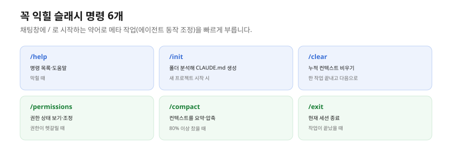
| 명령 |
동작 |
언제 쓰나 |
/help |
사용 가능한 명령 목록·도움말 |
막힐 때 |
/init |
작업 폴더 분석해 CLAUDE.md 자동 생성 |
새 프로젝트 시작 시 |
/clear |
누적 컨텍스트 비우기 |
한 작업 끝내고 다음 작업 넘어갈 때 |
/permissions |
현재 권한 상태 보기·조정 |
권한이 헷갈릴 때 |
/compact |
컨텍스트를 요약 형태로 압축 |
컨텍스트가 80% 이상 찼을 때 |
/exit |
현재 세션 종료 |
작업이 끝났을 때 |
Code는 CLI 도구라 GUI에 없는 추가 명령이 있습니다 — /output-style(응답 스타일 변경), /cost(토큰·비용 보기), /model(모델 변경), /agents(서브에이전트 호출). Cowork은 GUI라 폴더 마운트·권한·모델 선택이 위젯으로 대체되고, /skill <name>으로 특정 스킬을 즉시 호출하는 패턴이 추가됩니다.
💡 슬래시 명령은 메타 작업에만 씁니다. 일반 작업은 자연어가 낫습니다. "이 폴더 분석해서 README.md 만들어줘"처럼 자연어로 충분한 일을 억지로 슬래시 형식에 맞출 필요는 없습니다.
실제 세션에서는 채팅창에 이렇게 한 줄씩 칩니다.
/init # ① 새 RSVP 프로젝트 폴더를 분석해 CLAUDE.md 자동 생성
/clear # ② DB 작업이 끝났으니 컨텍스트를 비우고 페이지 코드 작업 시작
/compact # ③ 대화가 길어졌을 때 앞부분을 요약해 토큰 절약
/permissions # ④ 지금 이 세션이 어떤 폴더·앱에 접근 가능한지 확인
9. MCP — 외부 도구 연결의 표준
9.1 MCP가 무엇인가
MCP(Model Context Protocol)는 AI 에이전트가 외부 서비스(Notion·Slack·Gmail·Supabase·GitHub 등)와 표준화된 방식으로 통신하게 하는 규격입니다. Anthropic이 2024년에 공개·표준화했고, 지금은 사실상 업계 표준입니다.
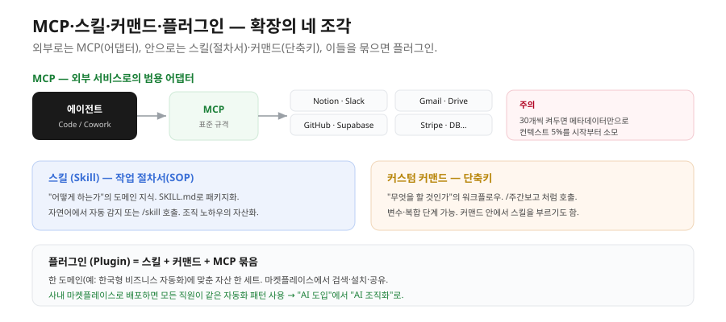
MCP는 AI를 위한 범용 어댑터입니다. 표준 어댑터가 없던 시절에는 도구마다 다른 케이블·커넥터·인증 방식을 써서, 에이전트가 새 도구와 연결할 때마다 통신 방식을 처음부터 새로 짜야 했습니다. MCP가 표준이 된 뒤로는 어댑터를 한 번 만들면 어떤 AI 클라이언트든 같은 규격으로 그 도구를 호출할 수 있습니다.
9.2 내장 MCP vs 마켓플레이스
내장 MCP는 Anthropic이 공식 지원하는 것으로, 한 번 설정으로 바로 씁니다. 생산성(Notion·Google Drive·Docs·Sheets·Calendar·Gmail·Outlook·OneDrive·Box·Dropbox), 협업(Slack·Teams·Discord·Linear·Asana·ClickUp·Trello·Monday), 개발(GitHub·GitLab·Bitbucket·Sentry·Vercel·Cloudflare·Supabase), 마케팅·세일즈(HubSpot·Salesforce·Mailchimp·Stripe), 데이터(PostgreSQL·MySQL·MongoDB·Redis·BigQuery·Snowflake·Airtable) 등이 있습니다. 마켓플레이스 MCP는 커뮤니티가 만든 것으로 Cowork·Code 둘 다에서 검색·설치할 수 있고, 자체 구축 MCP도 사내 마켓플레이스로 배포할 수 있습니다.
설정 방식은 다릅니다. Cowork은 설정 → MCP에서 마켓플레이스 검색 → 인증(OAuth 또는 API 키) → 즉시 사용까지 클릭 몇 번이면 끝납니다. Code는 CLI 명령(claude mcp add notion --auth oauth)이나 설정 파일 편집으로 설정합니다.
한 번 연결해두면 이후에는 자연어 한 줄로 그 서비스를 부립니다. 예를 들어 Notion·Slack MCP를 연결한 뒤에는 이렇게 지시합니다.
# MCP를 연결한 뒤 Cowork 채팅창에 자연어로 지시하는 모습
이번 주 RSVP 신청자 명단을 정리해서
→ Notion "이벤트 운영" 페이지에 표로 올리고
→ 정원(50명)의 80%를 넘으면 Slack #운영팀 채널에 알림을 보내줘
⚠️ MCP를 너무 많이 켜두지 말 것 — 매 세션 시작 시 켜진 MCP의 메타데이터(어떤 도구가 있고 어떻게 호출하는지)가 컨텍스트에 자동 로드됩니다. MCP가 30개면 메타데이터만으로 약 5만 토큰, 컨텍스트의 5%가 시작부터 사라집니다. 그 세션에 실제로 쓸 MCP만 켜두세요.
10. 스킬 — 도메인 지식 패키지
스킬(Skill)은 자주 쓰는 도메인 지식·작업 패턴을 매뉴얼처럼 패키지화한 것입니다. "이 분야 전문가의 노하우를 한 권의 표준 작업 절차서(SOP)로 만들어 모든 협력자가 같은 절차를 따르게 하는 것"과 같습니다. 예를 들어 "한국 비즈니스 이메일 작성" 스킬 안에는 한국 직장 문화의 인사·서명 규칙, 직급·관계별 어조 가이드, 자주 쓰는 표현 템플릿, 피해야 할 표현이 담깁니다. 이 스킬이 깔려 있으면 "팀장님께 이메일 초안 써줘"라고만 해도 한국 비즈니스 맥락이 자동으로 적용됩니다.
스킬은 SKILL.md라는 마크다운 파일로 만들며, 프론트매터(YAML)와 본문으로 구성됩니다.
---
name: korean-business-email
description: 한국 직장 문화에 맞는 비즈니스 이메일 작성. 직급·관계·상황을 입력받아 자연스러운 어조로 초안 생성.
---
description은 매우 중요합니다. 에이전트가 사용자 발화에서 "어떤 스킬을 쓸까"를 결정할 때 이 description을 보고 판단하기 때문입니다. 좋은 description은 트리거 키워드가 명확합니다.
프론트매터 아래 본문에는 사람이 읽는 매뉴얼처럼 절차와 규칙을 적습니다. 짧은 예시는 이렇습니다.
---
name: korean-business-email
description: 한국 직장 문화에 맞는 비즈니스 이메일 작성. 직급·관계·상황을 입력받아 초안 생성.
---
# 한국 비즈니스 이메일 작성 절차
1. 받는 사람의 직급·관계를 먼저 확인한다(상사/동료/외부).
2. 인사말 → 용건 → 요청 → 맺음말 순서로 구성한다.
3. 상사·외부에는 "~해 주시면 감사하겠습니다" 어조를 쓴다.
## 금지 사항
- 이모지·과한 느낌표 사용 금지
- 개인정보(휴대폰 번호 등)를 본문에 그대로 노출 금지
스킬에는 세 종류가 있습니다. 시스템 스킬은 Anthropic이 기본 제공하는 것으로 pdf·xlsx·docx·pptx 등이 자동 호출됩니다. 사용자 스킬은 사용자가 ~/.claude/skills/ 또는 프로젝트의 .claude/skills/에 만든 것입니다. 마켓플레이스 스킬은 커뮤니티가 만든 것으로, 도메인별로 묶여 플러그인 형태로 배포됩니다. Cowork은 마켓플레이스에서 클릭으로 설치하고 자연어에서 자동 호출하거나 /skill <name>으로 명시 호출하며, Code는 폴더를 직접 편집하거나 마켓플레이스 명령으로 설치합니다.
스킬의 진짜 가치는 조직의 도메인 지식을 자산화하는 수단이라는 점입니다. 한 명의 베테랑이 가진 노하우를 SKILL.md로 정리하면 조직의 모든 사람이 같은 노하우로 일할 수 있습니다. 도메인 지식을 회사 안에 묶어두면서 AI에게 가르치는 채널 — 이것이 스킬입니다.
11. 커스텀 커맨드 — 자주 쓰는 워크플로우
커스텀 커맨드는 자주 쓰는 작업을 슬래시 명령으로 만들어둔 것입니다. 스마트폰의 단축어와 같아서, "주간 보고서 작성" 같은 작업을 매번 자연어로 길게 부르는 대신 /주간보고로 즉시 호출합니다. 스킬과 비슷해 보이지만 역할이 다릅니다.
| 항목 |
스킬(Skill) |
커스텀 커맨드 |
| 본질 |
도메인 지식·매뉴얼 |
자주 쓰는 작업 지시서 |
| 호출 방식 |
자연어 자동 감지 또는 /skill |
명시적 슬래시 명령 |
| 비유 |
직원이 가진 전문 기술 |
직원에게 건네는 업무 지시 카드 |
| 재사용 단위 |
"어떻게 하는가"의 지식 |
"무엇을 할 것인가"의 워크플로우 |
대부분 둘이 함께 쓰입니다 — 커맨드 안에서 스킬을 호출합니다. 커맨드에는 변수를 넣어 동적으로 쓸 수 있고(/보고서 4월 마케팅 → 4월 마케팅 부서 보고서), 여러 단계로 구성할 수도 있습니다(/신제품런칭 → 보도자료 작성 → SNS 콘텐츠 3종 → 발송 이메일 초안이 순차 진행). Cowork·Code 둘 다 ~/.claude/commands/ 또는 .claude/commands/에 마크다운 파일을 두면 자동으로 슬래시 명령으로 등록됩니다.
12. 플러그인 — 스킬·커맨드·MCP 묶음
플러그인(Plugin)은 스킬·커맨드·MCP 셋(또는 그 일부)을 묶어 하나의 패키지로 만든 것입니다. "한국형 비즈니스 자동화" 같은 컨셉으로 묶인 자동화 자산 한 세트입니다. 범용 사진 편집 프로그램에 도메인별 프리셋 묶음(인쇄용·SNS용 등)을 설치하는 것과 같습니다. 프로그램 기능은 같지만 프리셋을 설치하면 클릭 한 번에 그 도메인에 맞는 결과가 나옵니다.
플러그인은 마켓플레이스에서 검색·설치·공유됩니다. 공식 Anthropic 마켓플레이스와 여러 커뮤니티 마켓플레이스가 있습니다. 한국 비즈니스 도메인을 가정하면 문서 생성(주간보고서·기안서·품의서), 커뮤니케이션(비즈니스 이메일·회의록·보도자료), 분석(데이터 리포트·매출 분석), 번역(한영·영한 비즈니스), 전문 분야(세무 상담·계약서 검토) 같은 스킬이 한 묶음으로 들어갑니다. 플러그인 하나를 설치하면 이 자산들이 자연어 발화에서 자동 호출됩니다.
플러그인은 조직 단위 자산화에 결정적입니다. 한 회사가 자기 도메인에 맞춰 플러그인을 만들고 사내 마켓플레이스로 배포하면 모든 직원이 같은 자동화 패턴을 씁니다. 이것이 "AI 도입"을 넘어 "AI 조직화"의 단계입니다. 실제 자산 제작은 중·고급 과정에서 다룹니다.
용어 정리
| 용어 |
뜻 |
| 격리(Isolation) |
에이전트가 닿을 수 있는 영역과 바깥을 가르는 경계 |
| 샌드박스 VM |
호스트와 분리된 Linux 가상머신. Cowork의 모든 셸 작업이 여기서 실행 |
| 폴더 마운트 |
Cowork이 접근할 폴더를 사용자가 명시적으로 허락하는 것 |
| Plan/Accept |
위험한 작업 전 계획을 보여주고 승인받는 공통 안전장치 |
| 권한 티어(read/click/full) |
앱 위험 수준에 따라 Cowork의 조작 범위를 차등하는 단계 |
| CLAUDE.md |
새 세션마다 자동으로 읽는 프로젝트 온보딩 위키 |
| 컨텍스트 압축기 |
세션이 길어지면 과거 대화를 요약해 토큰을 줄이는 장치 |
| 슬래시 명령 |
/로 시작하는 메타 작업 단축키(/init·/clear·/compact 등) |
| MCP |
외부 서비스를 에이전트 도구로 붙이는 표준 어댑터 |
| 스킬(Skill) |
도메인 지식·절차를 SKILL.md로 패키지화한 것(SOP) |
| 커스텀 커맨드 |
자주 쓰는 워크플로우를 슬래시 명령으로 만든 단축키 |
| 플러그인 |
스킬·커맨드·MCP를 묶어 배포하는 패키지 |
| 마스터 에이전트 루프 |
인지→행동→관찰을 반복하는 엔진의 심장 |
한눈에 정리
- 같은 엔진, 두 표현. 격리·권한·MCP·스킬 같은 깊은 개념은 Code·Cowork 둘 다에 같이 적용되고, 인터페이스만 다릅니다.
- 에이전트는 고정 응답(규칙)과 추론 응답(LLM)을 섞습니다. 일관성이 필요한 곳은 규칙으로 고정하고, 판단이 필요한 곳은 추론에 맡깁니다.
- 엔진은 7개 레이어로 돌고, 심장은 인지→행동→관찰을 반복하는 마스터 루프입니다. AI는 한 번에 답하지 않고 작은 결정을 반복합니다.
- 안전은 격리(Cowork) / Plan·Accept(공통) / 권한 티어(Cowork)로 지켜집니다. 보안 정책이 강한 조직에는 Cowork의 격리가 유리합니다.
- CLAUDE.md는 반복 설명을 없애는 온보딩 위키, MCP는 외부 어댑터, 스킬은 절차서, 커맨드는 단축키, 이들을 묶으면 플러그인입니다. 플러그인 사내 배포가 "AI 조직화"의 핵심입니다.
다음 강에서는 좋은 프롬프트(RACE-V), 토큰·비용 관리와 컨텍스트 노화(context rot), Live Artifact, 그리고 무엇을 자동화할지 고르는 4축 프레임을 다룹니다.
2부 · 초급
코딩 with Claude 초급 3강. 프롬프트·비용·자동화 설계
유형: 이론 (다이어그램 보강판) · 읽는 데 약 40분
선수: 2강(에이전트 엔진 원리). CLAUDE.md·MCP·스킬·서브에이전트의 개념을 알고 있어야 합니다.
이 강을 마치면: ① 좋은 프롬프트(RACE-V)와 3대 함정을 구분한다 ② 토큰이 녹는 이유와 컨텍스트 노화(context rot)를 관리한다 ③ Live Artifact로 살아 있는 대시보드를 언제 쓸지 판단한다 ④ 4축 프레임으로 자동화할 일을 골라내고 5단계로 설계한다.
0. 들어가며
2강이 "에이전트가 어떻게 작동하는가"였다면, 이 강은 "그 에이전트를 어떻게 잘 부리고, 어떻게 비용을 관리하며, 무엇을 자동화할지 고르는가"입니다. 도구의 원리를 알아도 지시를 잘 못하면 결과가 나오지 않고, 자동화할 일을 잘못 고르면 오히려 시간이 늘어납니다. 이 강은 그 실무 판단을 다룹니다.
1. 프롬프트 엔지니어링 — 좋은 지시는 어떻게 쓰나
1.1 챗봇과 에이전트에서 프롬프트의 차이
챗봇 시대의 프롬프트 엔지니어링은 주로 텍스트 답변의 품질을 끌어올리는 기법(역할 부여·예시·단계적 사고 등)이었습니다. 에이전트 시대에는 여기에 더해 에이전트가 무엇을 할지를 정확히 정렬하는 기법이 추가됩니다. 잘못된 프롬프트는 잘못된 답이 아니라 잘못된 행동으로 이어집니다. 파일을 엉뚱하게 지우거나, 원치 않는 방향으로 코드를 짜거나, 되묻느라 시간을 씁니다.
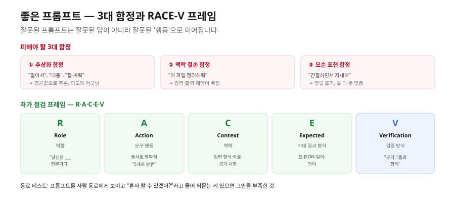
1.2 프롬프트의 3대 함정
비개발자가 처음 프롬프트를 짤 때 빠지는 세 가지입니다. 각각 본인 사례로 한 번씩 겪어봐야 다음에 안 빠집니다.
① 추상화 함정 — "알아서 정리해줘", "대충", "대략적으로" 같은 말입니다. 사람 머릿속엔 "잘"의 그림이 있지만 에이전트에겐 없습니다. 추상어를 받으면 에이전트는 자기가 가진 평균값으로 추론하고, 그 결과가 사용자 의도와 어긋나 다시 시켜야 합니다.
② 맥락 결손 함정 — "이 파일 정리해줘"처럼 어느 파일인지, 어떤 정리(중복 제거? 정렬? 요약?)인지, 결과를 어디에 둘지, 제약(시간·길이·금기)이 무엇인지가 다 빠진 경우입니다. 에이전트가 계획 단계에서 모두 되묻거나 잘못 해석합니다.
③ 모순 표현 함정 — "간결하면서 자세히 풀어서 요약해줘", "정확하지만 빠르게 답해줘"처럼 서로 모순된 요구를 한 문장에 담는 경우입니다. 에이전트가 어중간하게 균형을 잡으려다 결국 둘 다 못 맞춥니다.
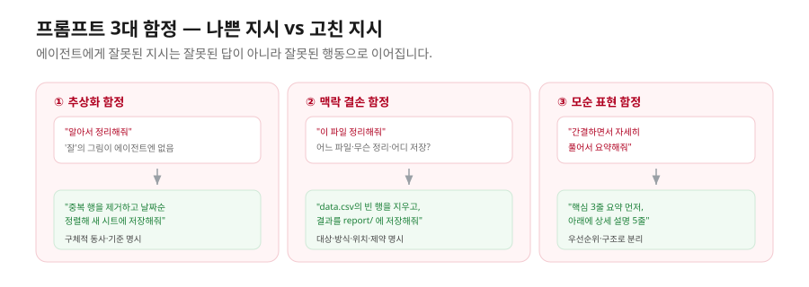
1.3 좋은 프롬프트의 5요소 — RACE-V
이 함정을 피하는 자가 점검 프레임이 R·A·C·E·V입니다.
- R — Role(역할): "당신은 ___ 전문가다." 어떤 관점·톤·도메인 지식으로 답할지 정합니다.
- A — Action(요구 행동): 무엇을 할지 동사로 명확하게. "분석해줘"보다 "5개 카테고리로 분류하고 카테고리당 핵심 3개를 추출해줘"처럼 씁니다.
- C — Context(맥락): 입력 형식·관련 자료·이전 결정·금기 사항. 사람이 보면 자명한 것도 에이전트에겐 명시해야 합니다.
- E — Expected output(기대 결과 형식): 표·리스트·마크다운·JSON·길이·언어. "마크다운 표, 한국어, 5행 이내"처럼 씁니다.
- V — Verification(검증 방식): 결과의 옳고 그름을 어떻게 확인할지. "확인 가능한 출처와 함께", "각 주장에 근거 1줄"처럼. 이게 들어가면 에이전트가 검증 가능한 형태로 결과를 만듭니다.
RSVP 신청자 데이터를 정리시키는 프롬프트를 예로, 나쁜 지시를 RACE-V로 고치면 이렇게 달라집니다.
# ❌ 나쁜 프롬프트 (추상화·맥락 결손)
RSVP 신청자 좀 정리해줘.
# ✅ RACE-V를 적용한 프롬프트
[R] 너는 이벤트 운영 담당자다.
[A] 마운트한 rsvp_export.csv를 읽어 부서별 참석 인원을 집계하고,
참석률이 낮은 상위 3개 부서를 뽑아줘.
[C] CSV 컬럼은 이름·부서·참석여부(Y/N)다. 개인 이름은 결과에 넣지 마.
[E] 마크다운 표(부서·신청·참석·참석률%)로, 한국어, 5행 이내.
[V] 참석률 = 참석/신청으로 계산했는지 각 행 옆에 근거 숫자를 남겨줘.
이 다섯 글자를 본인 프롬프트에 적용하면 위 3대 함정을 거의 다 피합니다.
1.4 동료 테스트 — 가장 강력한 자가 점검법
💡 동료 테스트 — 프롬프트를 사람 동료에게 보여주고 "이 작업을 너 혼자 할 수 있겠어?"라고 물어봅니다. 동료가 "어디 폴더 거?", "정리한다는 게 뭔데?"라고 되묻는다면 그건 프롬프트가 부족한 것입니다.
통찰은 단순합니다. 사람이 이해 못 하는 프롬프트는 에이전트도 이해 못 합니다. 에이전트가 사람보다 똑똑한 게 아닙니다. 사람이 한 번에 이해할 만큼 명확하게 써야 좋은 결과가 나옵니다. 이 원칙은 Cowork·Code 둘 다에 똑같이 적용됩니다. 도구가 다르다고 좋은 프롬프트의 형태가 달라지지 않습니다.
2. 토큰·비용·세션 관리
2.1 토큰이 녹는 3가지 이유
첫째, 부적절한 모델 선택입니다. 모든 작업에 Opus를 쓰면 비용이 몇 배입니다. 단순 분류·요약은 Haiku로 충분합니다. 둘째, 컨텍스트 정리를 안 함입니다. 한 세션에서 여러 작업을 누적하면 컨텍스트가 빠르게 차고, /clear를 안 부르면 매 작업마다 앞의 모든 대화가 입력으로 들어갑니다. 셋째, 누적 대화 반복 읽기입니다. 에이전트가 같은 파일·자료를 반복적으로 읽는 경우로, 좋은 CLAUDE.md가 없을 때 자주 생깁니다.
2.2 절약 패턴 5가지
① 모델은 작업에 맞춰 — 처음엔 Sonnet, 부족하면 Opus, 단순 반복은 Haiku. ② 한 세션, 한 작업 — "새 작업이면 새 세션"을 원칙으로, 작업 끝마다 /clear. ③ CLAUDE.md로 반복 설명 제거 — 프로젝트 특성·코드 스타일·자주 쓰는 명령을 CLAUDE.md에 둡니다. ④ MCP는 그 세션에 필요한 것만 — 30개를 켜두지 않습니다. ⑤ /compact로 긴 세션 요약 — 세션이 길어지면 중간에 압축해 토큰을 절반으로 줄입니다.
사용량은 Code의 /cost, Cowork의 설정 → 사용량 대시보드, Claude 계정 페이지의 월간 누적·모델별 분포로 확인합니다.
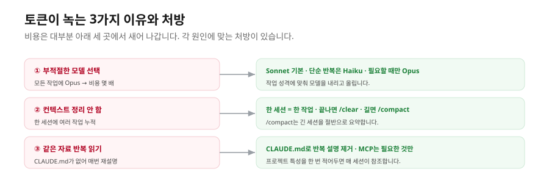
2.3 컨텍스트 노화 — Context Rot
비용보다 더 미묘한 문제가 하나 있습니다. 세션이 길어질수록 모델의 답 품질이 점점 떨어집니다. 토큰이 다 안 차도 그렇습니다. 이 현상을 영어권에서는 context rot("컨텍스트가 썩는다")이라고 부릅니다.
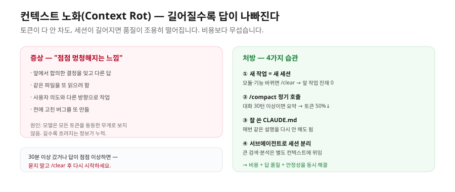
같은 1M 토큰짜리 컨텍스트라도 앞부분 80%가 차 있는 상태에서 새 질문을 던지면 다음 같은 일이 생깁니다. 앞에서 합의한 결정을 잊고 다른 답을 하고("아까 PostgreSQL 쓰기로 했잖아요" → 갑자기 MongoDB 코드), 같은 파일을 또 읽으려 하고, 사용자 의도와 다른 방향으로 코드를 짜고, 전에 고친 버그를 또 만듭니다. 핵심 원인은 모델이 컨텍스트 안의 모든 토큰을 "동등한 무게"로 보지 않는다는 점입니다. 위치·반복·구조에 따라 어떤 정보는 무시되거나 흐려지고, 컨텍스트가 길어질수록 이 효과가 누적됩니다.
이게 비용 문제보다 무서운 이유는, 비용은 청구서로 보이지만 context rot는 사용자가 알아채지 못한 채 결과물 품질만 나빠지기 때문입니다. "에이전트가 점점 멍청해지는 것 같다"는 느낌으로 오고, 디버깅하려 할 때는 이미 손해가 쌓인 뒤입니다.
처방은 네 가지 습관입니다.
| 습관 |
언제 |
효과 |
| 새 작업 = 새 세션 |
모듈·기능이 바뀔 때마다 /clear |
앞 작업의 잔재 0 |
/compact 정기 호출 |
한 세션이 길어진다 싶으면(대화 30턴 이상) |
토큰 ↓ 50%, 핵심만 요약 유지 |
| 잘 쓴 CLAUDE.md |
한 번 작성, 모든 세션이 자동 참조 |
매번 같은 설명을 다시 안 함 |
| 서브에이전트로 세션 분리 |
큰 검색·분석은 별도 컨텍스트에 위임 |
메인 컨텍스트가 검색 결과로 부풀지 않음 |
한 세션에서 작업이 30분 이상 가거나, 다른 작업으로 넘어갔거나, 같은 질문에 답이 점점 이상해진다면 — 묻지 말고 /clear 후 다시 시작하세요. 처음엔 "아까 이야기가 다 잊히면 어떡하지" 걱정되지만, 그 정보가 정말 필요했다면 CLAUDE.md에 적어두는 것이 정답입니다. 이 한 줄이 토큰 비용·답 품질·세션 안정성을 동시에 해결합니다.
컨텍스트 엔지니어링·서브에이전트 격리·MCP Tool Search 같은 고급 기법은 고급 과정에서 30개 이상 MCP를 동시에 운영하는 환경의 사례로 다룹니다. 입문 단계에서는 위 네 습관만 익히면 충분합니다.
3. Code 특화 심화 — 기획자가 알면 좋은 것
이 절은 Cowork에는 없거나 약하지만 Code에는 깊게 있는 기능들입니다. 독자가 Code를 직접 쓰진 않더라도, 조직에 Code 도입을 결정해야 할 때 알아야 할 핵심입니다.
Hooks — 자동 알림·자동 검증. Code에는 특정 이벤트(파일 저장 직전, 명령 실행 직후, 세션 종료 등)에 자동으로 무언가를 실행하는 기능이 있습니다. 코드 작성 후 자동 린트 검사, Git 커밋 직전 비밀번호·API 키 누출 검사, 작업 완료 시 Slack 자동 알림 등입니다. 조직 차원에서는 개발자가 깜빡해도 자동으로 검사하는 품질 게이트 역할을 합니다. Cowork에는 hook 시스템이 비개발자 인터페이스에 표면적으로 노출되지 않습니다.
서브에이전트 — 전문가 분업. 한 작업을 여러 전문 AI에게 나눠 맡기는 패턴입니다. 메인 에이전트가 전체를 조율하고, 코드 리뷰·UI/UX·보안 서브에이전트가 각자 도메인만 검토합니다. 각 서브에이전트는 자기 도메인에 특화된 컨텍스트만 받아 토큰 효율이 좋고 품질도 높습니다. 큰 프로젝트일수록 가치가 커집니다. Cowork도 부분 지원하지만 GUI 위에 추상화돼 있어 사용자가 직접 의식하지 않습니다.
IDE·GitHub 통합. Code는 VS Code·JetBrains 공식 확장이 있어 IDE 안에서 코드 작성·리팩토링·디버깅을 함께 합니다. GitHub PR 자동 리뷰, 이슈 분류, CI/CD 트리거도 자연스럽습니다. Cowork도 GitHub MCP로 같은 작업이 가능하지만 깊이는 Code 쪽이 두텁습니다.
정리하면 조직 도입 시 — 개발팀이 강한 Git/IDE 워크플로우를 가지거나, 품질 게이트·자동 검증이 조직 정책의 일부이거나, 여러 전문 AI를 분업시키고 싶으면 Code를 도입하고, 그 외 모든 사용자(기획·마케팅·운영)에게는 Cowork을 배포합니다.
4. Cowork 특화 심화 — Live Artifact
Cowork이 정식 출시와 함께 공개한 신규 기능입니다. 비개발자가 "한 번 만들면 매일 자동으로 새 데이터로 갱신되는 살아 있는 대시보드"를 데스크톱 사이드바에 핀처럼 꽂아두고 쓸 수 있습니다.
4.1 무엇이 "Live"인가
기존 Artifact는 대화 안에 박혀 있는 단발성 산출물이었습니다. HTML/SVG/React 한 장을 만들면 끝이고, 다시 보려면 대화를 검색해야 했으며, 데이터는 "만든 시점의 박제"였습니다. Live Artifact는 두 축의 "Live"를 더합니다. 첫째, 사이드바에 살아 있습니다 — 좌측 패널에 자동 저장돼 어떤 세션에서든 한 번의 클릭으로 다시 엽니다. 둘째, 데이터가 살아 있습니다 — 열 때마다 연결된 MCP 커넥터(Asana·Linear·Slack·Gmail·Notion 등)와 로컬 파일을 다시 호출해 오늘의 데이터를 가져와 그립니다.
비유하면 "Excel 대시보드인데 매번 열 때마다 자동으로 한 바퀴 데이터를 새로 불러오고 화면을 그려주는 버전", 또는 "AI가 만들어준 노션 위젯"입니다. 사이드바에 박힌 북마크인데, 클릭하면 알아서 어제 신청자 수, 오늘 마감인 태스크, 이번 주 멘션을 가져옵니다.
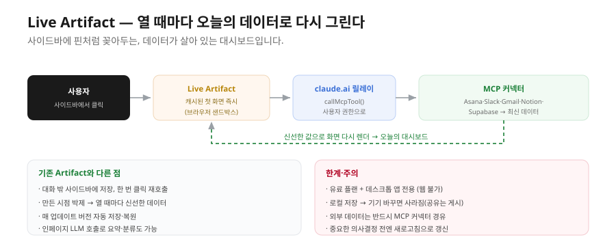
4.2 동작 방식
Live Artifact를 클릭해 열면 먼저 캐시된 첫 화면이 즉시 뜨고, 이어서 안의 자바스크립트가 내장 함수를 호출합니다. 이 호출이 claude.ai 릴레이 엔드포인트를 경유해 사용자가 이미 인증해둔 MCP 커넥터에 질의하고, 받은 최신 데이터로 화면을 다시 렌더합니다. Artifact 안의 코드를 아주 단순화하면 이런 흐름입니다.
// Live Artifact가 열릴 때마다 실행되는 의사코드
async function refresh() {
// 1) 인증해둔 MCP 커넥터에 오늘의 데이터를 요청 (릴레이 경유)
const rows = await callMCP("supabase", "select_participants_today");
// 2) 받은 최신 데이터로 화면(차트·표)을 다시 그림
render(rows);
}
refresh(); // 캐시된 첫 화면을 띄운 뒤 곧바로 최신 데이터로 갱신
여기에 인페이지 LLM 추론도 가능합니다 — Artifact 안에서 작은 요약·분류·자연어 응답을 돌릴 수 있고, 토큰은 그 Artifact를 보는 사용자의 플랜에서 차감됩니다. 업데이트마다 버전이 자동으로 쌓여 이전 버전을 복원할 수 있습니다. 저장은 사용자 컴퓨터의 로컬 디스크라 클라우드로 동기화되지 않으며, React·Tailwind·Recharts·shadcn/ui·Chart.js·D3·Mermaid·Three.js 등 주요 CDN 라이브러리를 씁니다(서버 코드·DB 직접 연결은 불가한 샌드박스입니다).
4.3 기존 Artifact와 비교
| 항목 |
기존 Artifact |
Live Artifact |
| 저장 위치 |
대화 안에 내장 |
사이드바 패널, 로컬 디스크 |
| 데이터 |
만든 시점에 박제 |
열 때마다 커넥터에서 신선한 데이터 |
| 재호출 |
대화 검색 필요 |
한 번 클릭, 핀 가능 |
| 버전 |
없음/제한적 |
매 업데이트마다 버전 + 복원 |
| 디바이스 |
클라우드 보존 |
로컬 보존(기기 이동 시 사라짐) |
| 플랜 |
Free에서도 일부 |
유료 플랜, 데스크톱 한정 |
4.4 활용 시나리오와 도입 판단
비개발자 기획자의 시나리오로는 모닝 브리프 페이지(오늘 일정 + 나를 멘션한 Slack + 리뷰 요청받은 PR을 한 화면에), 프로젝트 트래커(Asana·Linear의 열린 태스크를 담당자별 카드로), 경쟁사 모니터(톱5 경쟁사의 최신 릴리스·가격 변경), 광고 ROI 대시보드, 콘텐츠 파이프라인 보드, 개인 ROI 계산기(사내 가격표·사용 데이터로 제안 가격 시뮬레이션), 이벤트 RSVP 운영 화면(신청 추이·당일 입장 체크) 등이 있습니다. 공통 핵심은 "매일·매주 같은 화면을 다시 그릴 필요가 없다"입니다.
도입은 네 가지 질문으로 판단합니다. ① 이 화면을 일주일에 2번 이상 보고 싶은가?(아니면 일반 Artifact로 충분) ② 데이터 원본이 MCP로 연결 가능한가?(사내 DB라면 자체 MCP 또는 export 파일) ③ 결정을 위해 매번 신선한 값이 필요한가? ④ 팀과 공유할 필요가 있는가?(공유는 별도 게시 흐름) 입니다.
한계도 분명합니다. 유료 + 데스크톱 전용(웹에서는 불가), 기기 종속(로컬 저장이라 노트북을 바꾸면 사라지고, 팀 공유는 게시 흐름이 필요), 모든 외부 데이터는 MCP 커넥터 경유(임의 외부 API 직접 호출 불가), 데이터 신선도 함정(빠른 첫 화면을 위해 짧은 캐시를 쓰므로 중요한 의사결정 직전엔 새로고침으로 명시 갱신), 비용(자주 여는 대시보드는 누적 토큰이 무시 못 하고, 인페이지 LLM 호출은 보는 사용자 플랜에서 차감되므로 팀 공유 시 비용 분배를 미리 합의)입니다.
5. 자동화 적합도 평가 — 무엇을 자동화할까
5.1 모든 일이 자동화에 적합하진 않다
비개발자가 AI 에이전트를 처음 만나면 "이걸로 모든 게 자동화되겠다"는 흥분이 옵니다. 그러나 모든 반복 업무가 자동화에 적합한 것은 아닙니다. 잘못된 일을 자동화하면 오히려 시간이 늘고 품질이 떨어집니다.
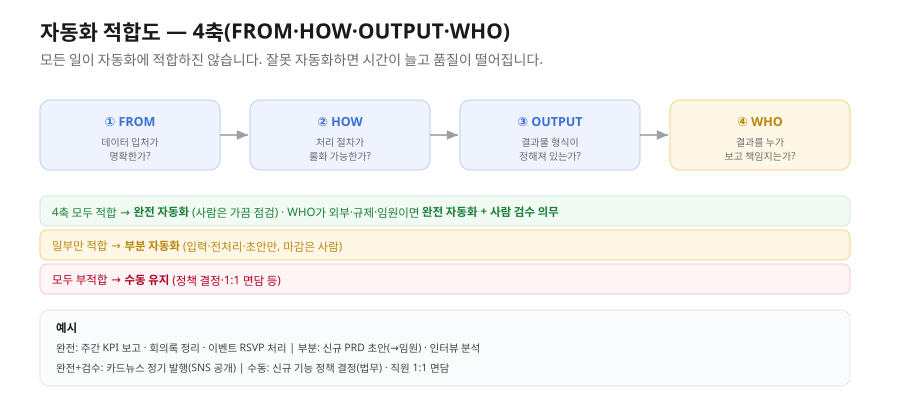
5.2 4축 평가 프레임 (FROM·HOW·OUTPUT·WHO)
① FROM — 데이터의 입처가 명확한가. 매번 같은 시스템·같은 양식에서 오면 자동화에 적합하고, 비공식 대화·이메일 같은 비정형은 부분 자동화에 한정되며, 매번 다른 곳·다른 양식이면 어렵습니다.
② HOW — 처리 절차가 정해져 있는가. 단계가 항상 같고 분기가 적으면 적합하고, 분기·예외가 많지만 룰화 가능하면 부분 자동화, 매 케이스 사람의 판단이 필요하면 부적합입니다.
③ OUTPUT — 결과물 형식이 정해져 있는가. 표준 양식·양식 변환은 적합하고, 매번 형식이 바뀌면 어려우며, 창의적·시각적 결과물(대본·디자인)은 초안만 자동, 마감은 사람이 합니다.
④ WHO — 결과를 누가 보고 책임지는가. 본인·팀 내부는 실수 비용이 낮아 부담이 적고, 외부 고객·임원·법무 검토는 자동화 결과를 항상 사람이 검수하며, 규제·법률 영향이 있으면 책임 분배를 명확히 한 뒤 자동화합니다.
4축이 모두 적합하면 완전 자동화 후보, 일부만 적합하면 부분 자동화, 모두 부적합이면 수동 유지입니다.
5.3 사례 매트릭스
| 작업 |
FROM |
HOW |
OUTPUT |
WHO |
자동화 수준 |
| 주간 KPI 보고서 |
✅ |
✅ |
✅ |
팀 내부 |
완전 |
| 회의록 정리·공유 |
✅ |
✅ |
✅ |
팀 내부 |
완전 |
| 신규 PRD 초안 |
✅ |
△ |
△ |
외부 임원 |
부분(초안→사람) |
| 사용자 인터뷰 분석 |
△ |
❌ |
❌ |
팀 내부 |
부분(전사·요약만) |
| 임원 보고용 피칭 |
❌ |
❌ |
❌ |
임원 |
부분(구조·시안만) |
| 신규 기능 정책 결정 |
❌ |
❌ |
❌ |
외부·법무 |
수동 |
| 직원 1:1 면담 |
❌ |
❌ |
❌ |
사람 |
수동 |
| 카드뉴스 정기 발행 |
✅ |
✅ |
△ |
SNS 공개 |
완전 + 검수 |
| 이벤트 등록·RSVP |
✅ |
✅ |
✅ |
사용자 |
완전 |
이 매트릭스는 본인 업무 5~10개에 그대로 적용해 보는 워크북입니다. 4축 표기를 채워보면 자동화 우선순위가 자연스럽게 도출됩니다.
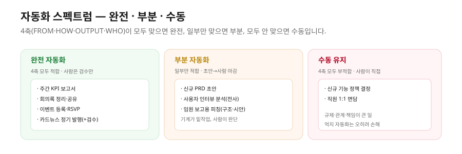
6. 디지털 워크플로우 설계 — 업무를 자동화로 옮기는 5단계
도구를 먼저 배우면 쓸 곳이 없습니다. 자기 업무를 먼저 분해·매핑해야 도구가 손에 들어옵니다. 이 순서를 5단계로 정리합니다.
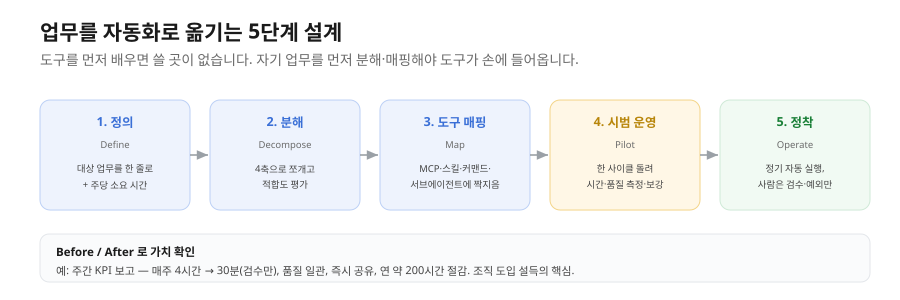
1단계 — 정의(Define). 자동화 대상 업무를 한 줄로 정의하고 매주 몇 시간 드는지 계산합니다. 예: "주간 마케팅 KPI 보고서 작성 — 매주 4시간".
2단계 — 분해(Decompose). 5장의 4축(FROM·HOW·OUTPUT·WHO)으로 업무를 쪼개고 적합도를 평가합니다. 예: FROM(GA·Mixpanel·Slack ✅) / HOW(정해진 절차 ✅) / OUTPUT(노션 표준 양식 ✅) / WHO(팀 내부 ✅) → 완전 자동화 후보.
3단계 — 도구 매핑(Map). 각 단계를 어떤 Cowork 자산(MCP·스킬·커맨드·서브에이전트·hook)으로 처리할지 짝짓습니다. 예: 데이터 수집(Mixpanel·GA MCP) / 분석(보고서 스킬) / 게시(Notion MCP) / 알림(Slack MCP).
4단계 — 시범 운영(Pilot). 한 사이클을 돌리고 결과·시간·품질을 측정합니다. 차이가 나는 부분(입력? 분석? 게시?)을 진단해 보강합니다.
5단계 — 정착(Operate). 스케줄링으로 정기 자동 실행하고, 사람은 결과 검수와 예외 처리만 합니다. 매월 한 번 5분 회고로 개선합니다.
5단계 모두를 1주일 안에 한 사이클 돌리는 것이 정착의 첫 단추입니다. 마지막에 Before/After를 적으면 조직 도입 설득에도 결정적입니다. 예를 들어 주간 KPI 보고는 소요 시간이 매주 4시간에서 30분(검수만)으로 줄고, 품질이 사람마다 다르던 데서 매번 같은 구조로 바뀌며, 이상치를 자동 탐지하고, 공유 지연이 없어지며, 연 단위로 약 200시간을 절감합니다.
7. 멘탈 모델 정리 7가지
① 같은 엔진, 두 가지 표현 — Code와 Cowork은 같은 도구 호출 메커니즘 위에 다른 인터페이스를 입혔습니다. 깊은 개념은 둘 다에 같이 적용됩니다.
② 격리는 보안 철학의 핵심 — Cowork은 격리(샌드박스)로, Code는 매번 묻기(Plan/Accept)로 사고를 막습니다. 조직 보안 문화에 맞춰 고릅니다.
③ 폴더 = 신뢰 경계 — 에이전트는 명시적으로 허락한 폴더만 봅니다. 아무 폴더에나 마운트하지 않습니다.
④ CLAUDE.md = 프로젝트 온보딩 위키 — 매번 같은 설명을 반복하는 패턴이 보이면 CLAUDE.md에 적습니다.
⑤ MCP는 어댑터, 스킬은 절차서, 커맨드는 단축키 — 셋이 묶이면 플러그인입니다.
⑥ 좋은 프롬프트는 동료가 이해할 만큼 명확하다 — 사람이 한 번에 이해 못 하는 프롬프트는 에이전트도 이해 못 합니다.
⑦ 자동화는 "어떤 일을 할까"의 결정에서 시작된다 — 모든 일을 자동화할 수는 없습니다. FROM·HOW·OUTPUT·WHO 4축으로 적합도를 먼저 보고, 그 다음에 도구를 매핑합니다.
8. 자주 묻는 질문
Q1. CLAUDE.md를 안 만들면 어떻게 되나요? — 동작은 합니다. 다만 매 세션마다 같은 설명을 반복해야 해서 시간·토큰이 빠르게 소모됩니다. 큰 프로젝트일수록 필수입니다.
Q2. 스킬과 커스텀 커맨드 중 무엇을 먼저 만들까요? — 자주 쓰는 작업의 결과물이 일관되게 안 나오면 스킬(노하우 패키지), 같은 작업을 매번 다시 설명하기 귀찮으면 커맨드(단축키)입니다. 둘 다면 둘 다 만듭니다.
Q3. 프롬프트가 자꾸 길어집니다. 어디까지가 적정인가요? — "동료가 이해할 만큼"이 기준입니다. 너무 짧으면 모호하고 너무 길면 핵심을 놓칩니다. 한 작업 단위로 200~500자가 일반적입니다.
Q4. 자동화가 너무 잘 되면 사람 일이 사라지지 않나요? — 단기에는 시간이 남습니다. 그 시간을 더 전략적·창의적·관계적 일에 쓰는 것이 핵심입니다. AI는 사람을 대체하는 게 아니라 사람의 영향력을 증폭합니다.
용어 정리
| 용어 |
뜻 |
| RACE-V |
프롬프트 자가 점검 프레임(Role·Action·Context·Expected·Verification) |
| 3대 함정 |
추상화·맥락 결손·모순 표현 |
| 동료 테스트 |
프롬프트를 사람 동료에게 보여 이해 가능한지 확인하는 점검법 |
| Context Rot(컨텍스트 노화) |
세션이 길어질수록 답 품질이 조용히 떨어지는 현상 |
/compact |
긴 세션을 요약·압축해 토큰을 줄이는 명령 |
| Live Artifact |
사이드바에 저장되고 열 때마다 커넥터에서 신선한 데이터를 가져오는 대시보드 |
| 인페이지 LLM |
Artifact 안에서 직접 도는 요약·분류 추론(보는 사용자 플랜에서 차감) |
| 자동화 4축 |
FROM(입처)·HOW(절차)·OUTPUT(형식)·WHO(책임) |
| 워크플로우 5단계 |
정의·분해·도구 매핑·시범 운영·정착 |
| 품질 게이트 |
Hook으로 자동 검사를 강제하는 조직 정책 장치 |
한눈에 정리
- 좋은 프롬프트는 RACE-V로 점검하고 3대 함정(추상화·맥락 결손·모순)을 피합니다. 최종 점검은 동료 테스트입니다.
- 토큰은 모델 선택·컨텍스트 정리·반복 읽기에서 녹습니다. 절약 5패턴과 함께, 비용보다 무서운 컨텍스트 노화를 네 습관(
/clear·/compact·CLAUDE.md·서브에이전트)으로 관리합니다.
- Live Artifact는 열 때마다 신선한 데이터로 그리는 대시보드입니다. "주 2회 이상 보고, MCP로 연결되고, 신선한 값이 필요한" 화면에 씁니다.
- 자동화는 FROM·HOW·OUTPUT·WHO 4축으로 적합도를 먼저 판단하고, 5단계(정의·분해·매핑·시범·정착)로 설계합니다. 도구보다 업무 분해가 먼저입니다.
다음 강에서는 이 원리들을 실제 서비스 제작으로 이어, 이벤트 RSVP 웹앱과 카드뉴스 콘텐츠 자동화를 만드는 전체 워크플로우를 따라갑니다.
2부 · 초급
코딩 with Claude 초급 4강. 서비스 제작 워크플로우 + 회고
유형: 사례·워크플로우 (다이어그램 보강판) · 읽는 데 약 35분
선수: 1~3강. RSVP 러닝 예시(0강)와 CLAUDE.md·MCP·RLS·자동화 4축 개념을 알고 있어야 합니다.
이 강을 마치면: ① 풀스택 웹앱 한 사이클(생성→DB→코드→배포)의 골격을 그린다 ② 외부 API 콘텐츠 자동화의 일반 패턴을 설명한다 ③ 입문에서 자주 겪는 함정 7가지를 안다 ④ 본인 업무에 적용할 자동화 1개를 설계하고 다음 학습 단계를 잡는다.
0. 들어가며
앞의 세 강은 원리였습니다. 이 강은 그 원리가 실제 서비스로 어떻게 이어지는지 두 가지 사례로 봅니다. 하나는 이벤트 RSVP 웹앱(프론트·백엔드·배포의 풀세트), 다른 하나는 카드뉴스 콘텐츠 자동화(외부 API 파이프라인)입니다. 여기서는 한 줄씩 따라 치는 실습이 아니라, 결과물의 구조와 만드는 순서(워크플로우)를 봅니다. 이 골격을 이해하면 회사에서 만들 어떤 프로토타입에도 그대로 적용할 수 있습니다.
1. 사례 1 — 이벤트 RSVP 웹앱
1.1 결과물 아키텍처
RSVP 웹앱은 사용자가 사내 이벤트를 보고 참석을 신청하는 서비스입니다. 이 강의 러닝 예시(0강)로 계속 써온 그 서비스입니다. 구조는 네 조각으로 이뤄집니다.
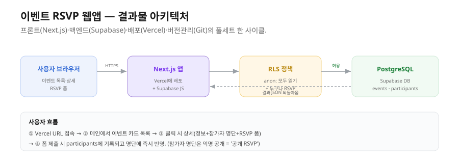
사용자의 브라우저가 Vercel에 배포된 Next.js 앱에 HTTPS로 접속하면, 앱은 Supabase 자바스크립트 클라이언트를 통해 데이터베이스에 요청합니다. 이 요청은 곧바로 DB에 닿지 않고 RLS(Row Level Security) 정책이라는 검문소를 먼저 통과합니다. RLS는 "익명(anon) 사용자는 모든 이벤트를 읽을 수 있고, 누구나 RSVP를 남길 수 있다"처럼 접근 규칙을 강제합니다. 규칙을 통과한 요청만 PostgreSQL DB(events·participants 두 테이블)에 도달하고, 결과가 역순으로 돌아와 화면에 그려집니다.
사용자 흐름은 이렇습니다. ① 배포된 URL에 접속하면 ② 메인 페이지에 이벤트 카드 목록이 뜨고 ③ 한 이벤트를 클릭하면 상세 페이지(이벤트 정보 + 참가자 명단 + RSVP 폼)가 나오며 ④ 폼을 제출하면 participants 테이블에 기록되고 명단에 즉시 반영됩니다. 참가자 명단이 익명으로 공개된다는 점이 "공개 RSVP"의 본질입니다.
에이전트가 만드는 두 테이블과 RLS 정책의 뼈대는 이렇습니다. (SQL을 몰라도, "무엇을 켜고 무엇을 허용하는지"만 읽으면 됩니다.)
-- 이벤트 테이블: 제목·일시·정원
create table events (
id uuid primary key default gen_random_uuid(),
title text not null,
event_at timestamptz not null,
capacity int not null default 50
);
-- 참가자 테이블: 어느 이벤트에 누가 신청했는지
create table participants (
id uuid primary key default gen_random_uuid(),
event_id uuid references events(id),
name text not null, -- 화면에는 익명 처리해 노출
created_at timestamptz default now()
);
-- RLS 켜기 + 익명(anon) 사용자에게 "읽기"와 "신청(추가)"만 허용
alter table participants enable row level security;
create policy "anyone can read" on participants for select to anon using (true);
create policy "anyone can insert" on participants for insert to anon with check (true);
1.2 만드는 순서 — 한 사이클의 골격
이 서비스를 Cowork으로 만드는 과정은 여덟 단계로 흐릅니다. 각 단계에서 자연어로 시키고, 에이전트가 제시한 계획(Plan)을 검토하고, 결과를 확인하는 패턴이 반복됩니다.
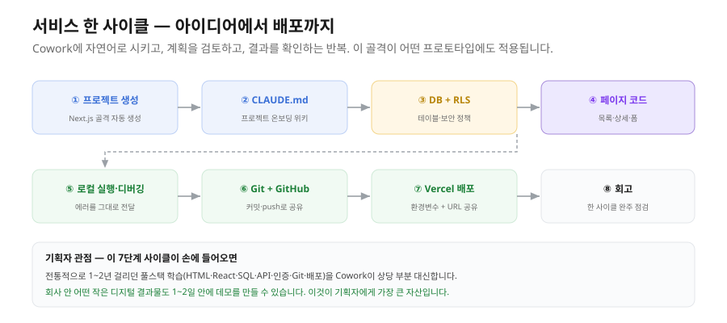
① 프로젝트 생성 — "Next.js + TypeScript + Tailwind로 프로젝트 만들어줘"라고 하면 에이전트가 골격을 자동 생성하고 패키지를 설치합니다. ② CLAUDE.md 작성 — 프로젝트 시작 시점에 온보딩 위키를 만들어 이후 세션이 매번 참조하게 합니다. ③ DB + RLS — Supabase에 events·participants 테이블을 만들고 RLS 정책을 켭니다. ④ 페이지 코드 — 목록·상세·RSVP 폼 페이지를 생성합니다. ⑤ 로컬 실행·디버깅 — 개발 서버를 띄워 확인하고, 에러가 나면 그 메시지를 그대로 에이전트에 전달해 고칩니다. ⑥ Git + GitHub — 커밋하고 push해 다른 사람이 검토할 수 있게 합니다. ⑦ Vercel 배포 — GitHub 저장소를 연결하고 환경변수를 등록하면 자동 배포되어 공개 URL을 받습니다. ⑧ 회고 — 한 사이클 완주를 점검합니다.
①단계에서 에이전트가 자동으로 만드는 프로젝트 폴더는 대략 이런 트리 구조입니다.
rsvp-app/
├─ CLAUDE.md # 프로젝트 온보딩 위키(사용자가 직접 관리)
├─ .env.local # Supabase 키(비밀 — Git에 올리지 않음)
├─ package.json # 의존성·실행 스크립트
├─ app/
│ ├─ page.tsx # 메인: 이벤트 카드 목록
│ └─ events/[id]/page.tsx # 상세: 정보 + 참가자 명단 + RSVP 폼
└─ lib/
└─ supabase.ts # Supabase 클라이언트 초기화
그리고 ①단계에서 Cowork에게 주는 자연어 지시는 이렇게 한 문단이면 충분합니다.
사내 이벤트 RSVP 웹앱을 만들 거야.
Next.js(App Router) + TypeScript + Tailwind로 프로젝트 골격을 잡고,
메인은 이벤트 카드 목록, 상세 페이지는 "이벤트 정보 + 참가자 명단 + 신청 폼"으로 구성해줘.
DB는 Supabase를 쓸 거니까 클라이언트 초기화 파일까지만 준비하고,
진행 전에 폴더 구조 계획을 먼저 보여줘.
이 순서에서 거의 모든 파일(레이아웃·컴포넌트·클라이언트 초기화·설정 파일)은 에이전트가 자동으로 만듭니다. 사용자가 직접 손대는 파일은 CLAUDE.md·README.md·.env.local 정도입니다.
1.3 기획자 관점의 함의
이 사이클에서 한 일은 전통적으로 "풀스택 개발"이라 부르던 작업입니다. 프론트엔드(Next.js) + 백엔드(Supabase의 PostgreSQL과 자동 생성 API) + 배포(Vercel) + 버전 관리(Git/GitHub)입니다. 전통적으로 이 풀세트를 다루려면 HTML·CSS·JavaScript, React, SQL과 DB 설계, API 디자인, 인증·보안, Git 워크플로우, 클라우드 배포, 환경 분리를 모두 익혀야 했고, 그 학습에 1~2년이 걸렸습니다. Cowork은 이 작업의 상당 부분을 자동화합니다. 사용자는 자연어로 시키고 계획을 검토하고 동작을 확인하며, 짧은 시간 안에 풀세트 한 사이클을 끝냅니다. 비개발자에게 풀스택 진입 장벽이 크게 낮아진 것입니다.
이 패턴은 회사에서 만들 어떤 프로토타입에도 적용됩니다. 사용자에게 결과물을 시각적으로 보여주고(데모), 요구사항을 자연어로 전달하고, 계획을 검토해 승인하고, 결과를 검수하고, 막히면 에러를 그대로 보내 디버깅하고, Git push로 검토받고, Vercel 자동 배포로 데모 URL을 공유하는 흐름입니다. 이 사이클이 손에 들어오면 회사 안 어떤 작은 디지털 결과물도 1~2일 안에 데모를 만들 수 있습니다.
물론 한계도 분명합니다. 이 결과물은 인증·권한(익명 RSVP만, 실제 서비스는 OAuth 로그인 필요), 복잡한 비즈니스 로직(트랜잭션·복잡한 쿼리·외부 API 통합), 대규모 트래픽(무료 tier 한도), 디자인 디테일(기본 스타일만으로는 부족, 디자이너 작업 필요)에서 아직 약합니다. 이런 부분은 중·고급 과정에서 다룹니다. 입문의 목표는 "한 사이클 완주"입니다.
2. 사례 2 — 카드뉴스 콘텐츠 자동화
2.1 파이프라인 구조
두 번째 사례는 키워드 한 줄로 카드뉴스를 만들어 인스타그램에 발행하는 자동화입니다. 화면은 4단계 Stepper로 구성되어, 사용자가 각 단계 결과를 확인하고 "다시 만들기" 또는 "다음 단계"를 고르며 진행합니다.
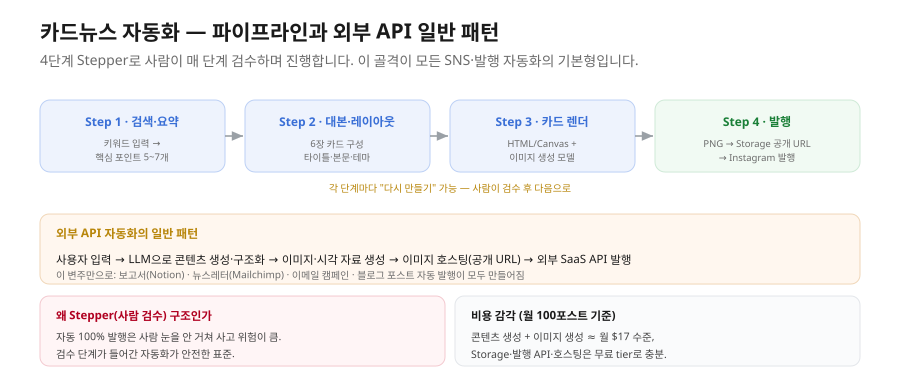
Step 1(검색·요약)은 키워드나 주제를 입력받아 콘텐츠 생성 모델로 핵심 포인트 5~7개를 뽑습니다. Step 2(대본·레이아웃)는 그 요약을 입력으로 6장짜리 카드 구성(카드별 타이틀·본문·시각 요소·색상 테마)을 만듭니다. Step 3(카드 렌더)는 각 카드를 HTML/Canvas로 그리고, 일러스트·배경이 필요하면 이미지 생성 모델을 호출해 삽입합니다. Step 4(발행)는 카드 6장을 PNG로 내보내 이미지 호스팅(Supabase Storage)에 올려 공개 URL을 받은 뒤, Instagram Graph API로 발행합니다. 각 단계마다 "다시 만들기"가 있어 사람이 결과를 검수하고 넘어갑니다.
2.2 외부 API 자동화의 일반 패턴
이 흐름은 사실 모든 외부 API 자동화의 일반 패턴입니다.
사용자 입력 → LLM으로 콘텐츠 생성·구조화 → 이미지·시각 자료 생성 → 이미지 호스팅(공개 URL) → 외부 SaaS API 발행
이 패턴의 변주만으로 카드뉴스 발행(인스타·페이스북·X·Threads·Pinterest), 보고서 발행(Notion·Confluence·Google Docs), 뉴스레터 발송(Mailchimp·SendGrid·Stibee), 이메일 캠페인, SNS 카드 자동 생성, 이벤트 공지 배포, 블로그 포스트 자동 작성·발행이 모두 만들어집니다. 이 강의에서 한 번 완주한 파이프라인이 위 모든 자동화의 골격입니다.
2.3 검수 구조·비용·한계
회사에 같은 자동화를 도입하는 표준 단계는 사용 사례 정의 → 외부 API 인벤토리(콘텐츠·이미지·SNS·이메일) → 인증·키 관리(비밀 관리 도구 + 환경별 분리) → 사용량 모니터링·비용 한도 → 사람 검수 단계 → 사후 분석·개선입니다. 이 중 사람 검수 단계가 결정적입니다. 자동 100% 발행은 사람의 눈을 거치지 않아 사고 위험이 큽니다. Stepper처럼 검수 단계가 들어간 자동화가 안전한 표준입니다.
비용 감각을 잡아보면, 월 100포스트 기준으로 콘텐츠 생성과 이미지 생성을 합쳐 대략 월 $17 수준이고, 이미지 호스팅·발행 API·서버리스 호스팅은 무료 tier로 충분합니다. 마케터 한 명이 매일 30분씩 카드뉴스를 만드는 시간을 대체한다고 보면 ROI가 매우 빠르게 회수됩니다.
한계도 있습니다. 인스타 비즈니스 API는 기본적으로 "본인(회사) 계정"에만 발행할 수 있습니다. 다른 사람·클라이언트 계정에 대신 발행하려면 Meta의 앱 심사(App Review)가 필요하고, 이는 입문 범위를 넘습니다. 회사 인스타 계정 하나에 자동 발행하는 시나리오는 이 패턴을 그대로 적용할 수 있습니다.
3. 회고 — 입문에서 자주 겪는 함정 7가지
두 사례를 만드는 동안 자주 만나는 함정을 정리합니다. 이 일곱 가지를 본인 입으로 설명할 수 있으면 입문 내용이 손에 정착한 것입니다.
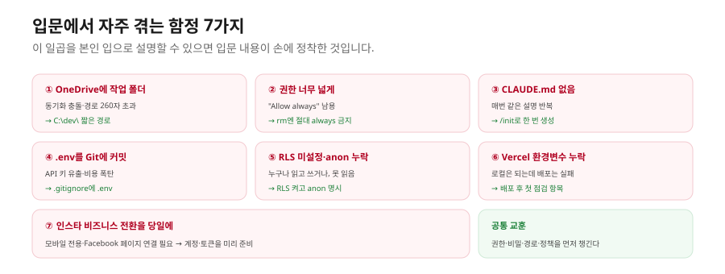
① Windows OneDrive 폴더에 작업 폴더 두기 — Files On-Demand로 인한 미동기화·동기화 충돌·경로 길이 260자 초과가 생깁니다. 정답은 C:\dev\<폴더명>처럼 OneDrive 바깥의 짧은 경로입니다.
② 권한을 너무 넓게 주기 — "Allow always" 남용이나 위험 플래그로 Plan/Accept의 안전망이 사라집니다. 입문자는 계획을 항상 표시하는 모드로, 안전한 작업만 always를 허용하고, rm 같은 파괴적 명령엔 절대 always를 주지 않습니다.
③ CLAUDE.md 없이 매번 같은 설명 반복 — 토큰·시간이 낭비되고 일관성이 떨어집니다. /init 또는 자연어로 한 번 만들고 살아있는 문서로 갱신합니다. (비유하면 "프로젝트 온보딩 위키"입니다.)
④ .env 파일을 Git에 커밋 — API 키·비밀번호가 공개돼 키 탈취·비용 폭탄으로 이어집니다. .gitignore에 .env를 추가하고, 환경변수는 배포 플랫폼 대시보드에 따로 등록합니다. (환경변수는 "비밀번호"입니다 — 메신저·이메일·Git에 노출 금지.)
⑤ Supabase RLS 미설정 또는 anon role 누락 — RLS가 꺼져 있으면 누구나 데이터를 읽고 쓰고 지울 수 있고, anon role이 빠지면 클라이언트가 데이터를 못 읽습니다. 테이블 생성 직후 RLS를 켜고 INSERT·SELECT 정책에 anon role을 명시합니다. (RLS의 기본 원칙은 "정책이 없으면 차단"입니다.)
⑥ Vercel 환경변수 누락 — 로컬에선 되는데 배포된 사이트에서는 키가 없어 데이터를 못 가져옵니다. 배포 후 안 되면 가장 먼저 환경변수를 확인합니다. Production·Preview에 동일하게 등록합니다.
⑦ 인스타 비즈니스 전환을 당일에 시도 — 모바일에서만 가능하고 Facebook 페이지 연결이 필요해 시간이 걸립니다. 발행 자동화를 계획한다면 계정·토큰 준비를 미리 끝내 둡니다.
이 일곱 가지를 알아두면 본인의 실수를 줄일 뿐 아니라, 동료가 같은 길을 갈 때 미리 알려줘 조직 전체의 학습으로 확장할 수 있습니다.
4. 본인 업무로 가져갈 자동화 1개
학습이 끝나는 순간 가장 큰 위험은 "다 잊고 일상으로 돌아가는 것"입니다. 두 결과물을 손에 들고 있어도 본인 업무에 한 가지를 적용하지 않으면 금세 흩어집니다. 이걸 막는 방법은 단순합니다 — "다음 주에 시도할 자동화 한 가지"를 정해서 적는 것입니다. 적은 것은 적지 않은 것보다 훨씬 자주 실행됩니다.
아래 캔버스에 자동화하고 싶은 업무 하나를 채워봅니다. 3강의 5단계 설계와 4축 평가를 그대로 씁니다.
나의 자동화 1번 — 워크플로우 설계 캔버스
1. Define — 업무 한 줄 정의: 자동화할 업무와 매주 소요 시간. 예) "매주 금요일 마케팅 KPI 보고서 작성 — 4시간"
2. Decompose — 4축 평가: FROM(입처 명확?) / HOW(절차 룰화?) / OUTPUT(형식 고정?) / WHO(누가 봄?) → 결론: 완전 / 부분 / 수동
3. Map — 도구 매핑: 어떤 MCP가 필요한가? 스킬을 만들어야 하나(어떤 도메인 지식)? 커맨드가 필요한가?
4. Pilot — 시범 운영: 한 사이클 돌려 결과·시간·품질 측정. 어디서 보강이 필요한가?
5. Operate — 첫 시도: 다음 주에 무엇부터, 몇 시에 할 것인가?
채우다 막히는 지점은 대개 정해져 있습니다. "내 업무는 자동화에 안 맞는 것 같다"면 너무 큰 단위로 보는 것이니 1시간 단위 작은 작업으로 쪼갭니다. "우리 도구의 MCP가 있나?"는 마켓플레이스에서 검색해 보고, "도메인 지식이 없어 스킬을 못 만들겠다"는 오해입니다 — 본인이 매주 하는 그 일이 도메인 지식이고, 본인이 밟는 절차를 그대로 글로 쓰면 그게 스킬입니다.
5. 다음 단계 학습 로드맵
입문에서 다룬 것은 시작입니다. "이게 다구나"라는 잘못된 만족이 학습을 멈추게 합니다. 다음 길이 보이면 자가 학습이 오래 지속됩니다.
중급에서 다루는 것 — 커스텀 커맨드 본격 작성(복합 워크플로우 자동화), 서브에이전트 기초(전문가 분업), hooks 입문(작업 완료 시 자동 알림), MCP 심화(Notion·Supabase·자동 테스트), Git 브랜치 전략·PR, Supabase OAuth 로그인과 RLS 심화, Vercel 환경 분리·도메인 연결, 코드 품질 게이트(ESLint·타입 체크 자동화), 토큰 최적화 심화입니다.
고급에서 다루는 것 — 스킬·플러그인 자체 제작과 사내 마켓플레이스 배포, Agent Teams·멀티에이전트 워크플로우, 외부 작업관리 도구 통합, hooks 고급과 자체 MCP 서버 제작, 룰 시스템과 자동 메모리 고급, PRD·로드맵 자동화, 30개 이상 도구를 동시에 연결할 때의 컨텍스트·비용 관리입니다.
조직에 도입하는 4단계 — ① 본인이 1개월 직접 사용(Pro/Max로 시간 절감·품질·리스크 측정), ② IT·보안팀과 데이터 처리 정책 협의(격리 vs Plan/Accept 이해 공유), ③ 작은 파일럿 3~5명(Max·Team으로 3개월 운영 후 ROI 측정), ④ 전사 확산(Team·Enterprise + 사내 스킬·플러그인 마켓플레이스 구축)입니다. 이 흐름이 검증된 표준 도입 패턴으로, 본인 회사의 IT·HR·임원 설득에 그대로 쓸 수 있습니다.
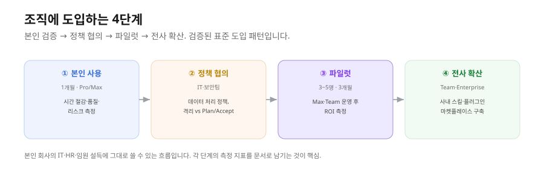
용어 정리
| 용어 |
뜻 |
| 풀스택 |
프론트엔드 + 백엔드 + 배포 + 버전관리를 아우르는 전체 스택 |
| RLS(Row Level Security) |
DB 접근을 행 단위로 통제하는 보안 정책. "정책 없으면 차단"이 기본 |
| anon role |
로그인하지 않은 익명 사용자 권한. RLS 정책에 명시해야 클라이언트가 읽음 |
| Stepper UI |
단계별로 결과를 검수하며 진행하는 화면 구조 |
| 외부 API 자동화 패턴 |
입력→LLM 생성→이미지→호스팅→SaaS 발행의 일반 골격 |
| 사람 검수 단계 |
자동 발행 전 사람이 결과를 확인하는 안전장치 |
| 환경변수(.env) |
API 키 등 비밀. Git에 올리지 않고 배포 플랫폼에 등록 |
| 한 사이클 완주 |
생성→DB→코드→배포까지 처음부터 끝까지 한 번 돌려보는 것 |
한눈에 정리
- RSVP 웹앱은 브라우저 → Next.js(Vercel) → Supabase 클라이언트 → RLS → PostgreSQL의 풀세트입니다. 만드는 순서는 생성 → CLAUDE.md → DB+RLS → 코드 → 디버깅 → Git → 배포 → 회고의 8단계입니다.
- 이 7~8단계 사이클이 손에 들어오면 회사 안 어떤 프로토타입도 1~2일 안에 데모를 만들 수 있습니다. 다만 인증·복잡 로직·대규모 트래픽·디자인은 아직 약합니다.
- 카드뉴스 자동화는 검색·요약 → 대본 → 렌더 → 발행의 4단계 Stepper이며, 이는 "입력→LLM→이미지→호스팅→발행"이라는 외부 API 자동화 일반 패턴의 한 예입니다. 사람 검수 단계가 안전한 표준입니다.
- 입문의 함정 7가지(OneDrive·과잉 권한·CLAUDE.md 누락·.env 커밋·RLS 누락·Vercel 환경변수·인스타 사전준비)를 기억하고, 자동화 1개를 정해 적은 뒤, 중급·고급·조직 도입으로 학습을 이어갑니다.
초급 과정은 여기서 마칩니다. 중급에서는 Cowork을 더 깊이 활용하는 커스텀 커맨드·서브에이전트·hooks·MCP 심화·운영을 다룹니다.